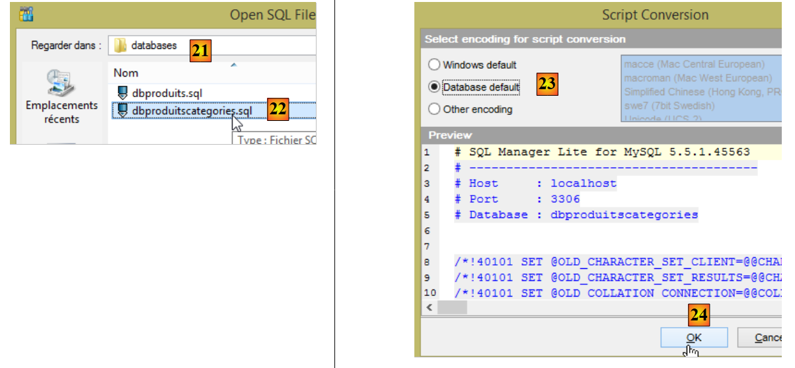
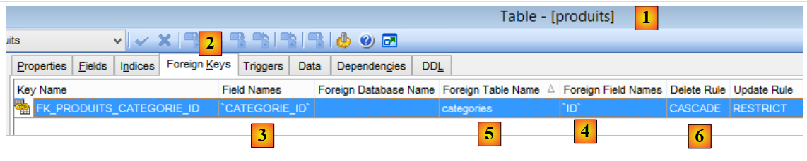
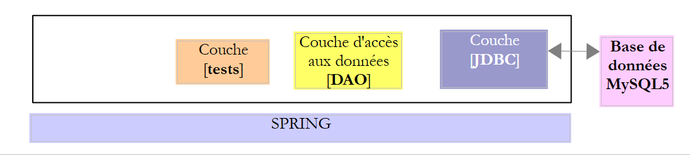
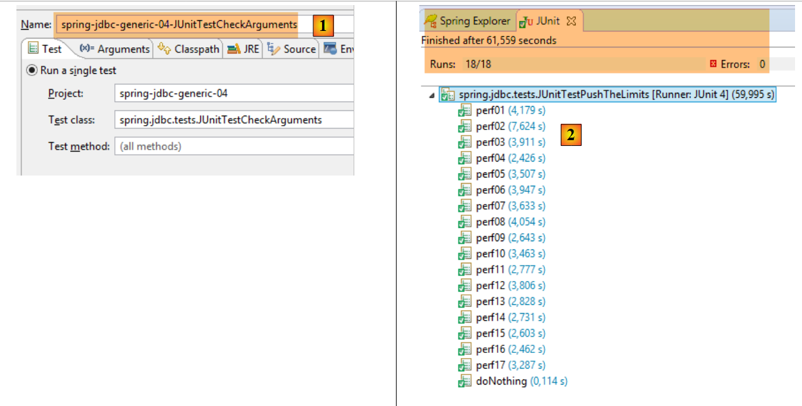

4. Introducción a Spring JDBC
En este capítulo, examinaremos la siguiente arquitectura:
 |
Esta es la misma arquitectura que antes. Introduciremos dos cambios:
- la base de datos tendrá dos tablas vinculadas mediante una relación de clave externa;
- la capa [DAO] se implementará utilizando la biblioteca [Spring JDBC], que simplifica la gestión de la API JDBC;
4.1. Configuración del entorno de desarrollo
Con STS, importe el proyecto [spring-jdbc-04] ubicado en la carpeta [<examples>/spring-database-generic/spring-jdbc]
 |
Además, debemos crear una nueva base de datos MySQL utilizando el cliente [MyManager] (véase la sección 3.1):
 |
- En [3], los siguientes ejemplos utilizan una base de datos MySQL denominada [dbproduitscategories];
 |
- En [9], introduzca la contraseña del usuario root (esta contraseña es «root» en este documento);
 |
 |
- En [18], la base de datos [dbproduitscategories] se creó vacía. Creamos tablas y las rellenamos con un script SQL [19-20];
 |
- En [21], ve a la carpeta [<examples>/spring-database-config/mysql/databases];
 |
- en [25], asegúrese de que se encuentra en la base de datos [dbproduitscategories] y no en la base de datos [dbproduits];
- en [29], el script SQL ha creado cinco tablas. Las tablas [ROLES, USERS, USERS_ROLES] solo se utilizarán cuando abordemos la seguridad del servicio web creado para exponer la base de datos [dbproduitscategories] en la web;
4.2. La base de datos [dbproduitscategories]
La base de datos [dbproduitscategories] es una extensión de la base de datos [dbproduits] mencionada anteriormente. Mientras que en la tabla [PRODUITS] el producto tenía una categoría identificada por un número que no tenía ningún significado concreto, aquí ese número será una clave externa en la tabla [CATEGORIES].
La tabla [PRODUCTS] es la siguiente:
 |
- [ID]: la clave principal autoincremental de la tabla [PRODUCTS];
- [NAME]: el nombre único del producto [4];
- [PRICE]: el precio del producto;
- [DESCRIPTION]: la descripción del producto;
- [VERSIONING] es el número de versión del producto. Su versión inicial es 1 [3]. Cada vez que se modifica el producto, el código que gestiona la tabla incrementa su número de versión;
- [CATEGORY_ID]: la clave externa de la tabla [CATEGORIES] para identificar la categoría a la que pertenece el producto;
 |
- en [1-3], la clave externa [CATEGORIE_ID] de la tabla [PRODUITS]. Hace referencia a la columna [ID] de la tabla [CATEGORIES] [4-5];
- cuando se elimina una categoría, también se eliminan todos los productos vinculados a ella [6]. Es importante tener en cuenta este punto, ya que se utiliza en la construcción de la capa [DAO] que utiliza la base de datos [dbproduitscategories];
La tabla [CATEGORIES] es la siguiente:
 |
- [ID]: clave primaria autoincremental;
- [VERSIONING]: número de versión de la categoría;
- [NAME]: nombre único de la categoría;
4.3. El proyecto Eclipse
 |
El proyecto [spring-jdbc-04] implementa la siguiente arquitectura:
 |
El proyecto [spring-jdbc-04] es un proyecto Maven configurado mediante el siguiente archivo [pom.xml]:
 |
<?xml version="1.0" encoding="UTF-8"?>
<project xmlns="http://maven.apache.org/POM/4.0.0" xmlns:xsi="http://www.w3.org/2001/XMLSchema-instance"
xsi:schemaLocation="http://maven.apache.org/POM/4.0.0 http://maven.apache.org/xsd/maven-4.0.0.xsd">
<modelVersion>4.0.0</modelVersion>
<groupId>dvp.spring.database</groupId>
<artifactId>spring-jdbc-generic-04</artifactId>
<version>0.0.1-SNAPSHOT</version>
<packaging>jar</packaging>
<name>spring-jdbc-generic-04</name>
<description>Demo project for Spring JdbcTemplate</description>
<parent>
<groupId>org.springframework.boot</groupId>
<artifactId>spring-boot-starter-parent</artifactId>
<version>1.2.3.RELEASE</version>
<relativePath /> <!-- lookup parent from repository -->
</parent>
<properties>
<project.build.sourceEncoding>UTF-8</project.build.sourceEncoding>
<java.version>1.8</java.version>
</properties>
<dependencies>
<!-- configuration JDBC of SGBD -->
<dependency>
<groupId>dvp.spring.database</groupId>
<artifactId>generic-config-jdbc</artifactId>
<version>0.0.1-SNAPSHOT</version>
</dependency>
<!-- Spring JdbcTemplate -->
<dependency>
<groupId>org.springframework.boot</groupId>
<artifactId>spring-boot-starter-jdbc</artifactId>
</dependency>
</dependencies>
<build>
<plugins>
<plugin>
<groupId>org.apache.maven.plugins</groupId>
<artifactId>maven-surefire-plugin</artifactId>
<version>2.18.1</version>
</plugin>
</plugins>
</build>
</project>
- líneas 28–32: el proyecto depende del proyecto [mysql-config-jdbc], que configura la capa JDBC;
- líneas 34–37: el artefacto [spring-boot-starter-jdbc] proporciona las bibliotecas JDBC de Spring;
Al final, las dependencias son las siguientes:
 |
4.4. Configuración de Spring
 |
La clase [AppConfig] que configura el proyecto Spring es la siguiente:
package spring.jdbc.config;
import generic.jdbc.config.ConfigJdbc;
import org.apache.tomcat.jdbc.pool.DataSource;
import org.springframework.context.annotation.Bean;
import org.springframework.context.annotation.ComponentScan;
import org.springframework.context.annotation.Configuration;
import org.springframework.context.annotation.Import;
import org.springframework.jdbc.core.namedparam.NamedParameterJdbcTemplate;
import org.springframework.jdbc.core.simple.SimpleJdbcInsert;
import org.springframework.jdbc.datasource.DataSourceTransactionManager;
import org.springframework.transaction.PlatformTransactionManager;
import org.springframework.transaction.annotation.EnableTransactionManagement;
@Configuration
@ComponentScan(basePackages = { "spring.jdbc.dao" })
@EnableTransactionManagement
@Import({ generic.jdbc.config.ConfigJdbc.class })
public class AppConfig {
// data source
@Bean
public DataSource dataSource() {
// data source TomcatJdbc
DataSource dataSource = new DataSource();
// configuration access JDBC
dataSource.setDriverClassName(ConfigJdbc.DRIVER_CLASSNAME);
dataSource.setUsername(ConfigJdbc.USER_DBPRODUITSCATEGORIES);
dataSource.setPassword(ConfigJdbc.PASSWD_DBPRODUITSCATEGORIES);
dataSource.setUrl(ConfigJdbc.URL_DBPRODUITSCATEGORIES);
// initially open connections
dataSource.setInitialSize(5);
// result
return dataSource;
}
// Transaction manager
@Bean
public PlatformTransactionManager transactionManager(DataSource dataSource) {
return new DataSourceTransactionManager(dataSource);
}
// JdbcTemplate
@Bean
public NamedParameterJdbcTemplate namedParameterJdbcTemplate(DataSource dataSource) {
return new NamedParameterJdbcTemplate(dataSource);
}
// product insertion
@Bean
public SimpleJdbcInsert simpleJdbcInsertProduit(DataSource dataSource) {
return new SimpleJdbcInsert(dataSource).withTableName(ConfigJdbc.TAB_PRODUITS).usingGeneratedKeyColumns(
ConfigJdbc.TAB_PRODUITS_ID);
}
// insertion category
@Bean
public SimpleJdbcInsert simpleJdbcInsertCategorie(DataSource dataSource) {
return new SimpleJdbcInsert(dataSource).withTableName(ConfigJdbc.TAB_CATEGORIES).usingGeneratedKeyColumns(
ConfigJdbc.TAB_CATEGORIES_ID);
}
}
- línea 16: la clase es una clase de configuración de Spring;
- línea 17: se analizará el paquete [spring.jdbc.dao] en busca de componentes de Spring distintos de los presentes en la clase [AppConfig]. Aquí es donde encontraremos el componente que implementa la capa [DAO];
- línea 18: no gestionaremos las transacciones nosotros mismos, sino que dejaremos que lo haga Spring JDBC. Lo único que habrá que hacer será anotar los métodos que deban ejecutarse dentro de una transacción con la anotación [@Transactional] de Spring. La línea 18 garantiza que esta anotación se procese y no se ignore. La gestión de transacciones la lleva a cabo una de las dependencias del proyecto Spring JDBC importadas a través del archivo [pom.xml];
- línea 19: importamos los beans ya definidos en la clase [generic.jdbc.config.ConfigJdbc] del proyecto [mysql-config-jdbc];
- líneas 23–36: el origen de datos [tomcat-jdbc] presentado en el ejemplo [spring-jdbc-02];
- líneas 40-42: el gestor de transacciones asociado a la fuente de datos definida anteriormente. El bean debe llamarse [transactionManager] porque este es el nombre utilizado por la anotación [@EnableTransactionManagement]. El [DataSourceTransactionManager] lo proporciona la biblioteca Spring JDBC (línea 12);
- líneas 45–48: el bean [namedParameterJdbcTemplate], en el que se basará la implementación de la capa [DAO]. Este bean lo proporciona la biblioteca Spring JDBC (línea 10). Este bean también está vinculado a la fuente de datos definida anteriormente (línea 47);
- líneas 51-55: el bean [simpleJdbcInsertProduit] (nombre arbitrario) se utilizará para insertar un producto en la tabla [PRODUITS] y recuperar la clave primaria generada. Los distintos parámetros utilizados son los siguientes:
- [dataSource]: el origen de datos [tomcat-jdbc] de las líneas 24-36;
- [ConfigJdbc.TAB_PRODUITS]: la tabla [PRODUITS];
- [ConfigJdbc.TAB_CATEGORIES_ID]: la columna de clave primaria de la tabla [PRODUCTS]. Tenga en cuenta que, para PostgreSQL, el nombre de esta columna debe estar en minúsculas;
- líneas 58-62: el bean [simpleJdbcInsertCategorie] se utilizará para insertar una categoría en la tabla [CATEGORIES] y recuperar la clave primaria generada;
4.5. Excepciones del proyecto
 |
Ya hemos visto las clases [UncheckedException, DaoException, ShortException] en el proyecto [spring-jdbc-03]. Vamos a añadir una nueva:
package spring.jdbc.infrastructure;
public class MyIllegalArgumentException extends UncheckedException {
private static final long serialVersionUID = 1L;
// manufacturers
public MyIllegalArgumentException() {
super();
}
public MyIllegalArgumentException(int code, Throwable e, String className) {
super(code, e, className);
}
}
- La clase [MyIllegalArgumentException] deriva de la clase [UncheckedException] y, por lo tanto, es una clase no comprobada. Se utilizará para señalar una llamada con argumentos incorrectos a un método en la capa [DAO]. No la llamamos [IllegalArgumentException] porque esta excepción ya existe en el JDK y esto a veces provocaba que el compilador generara una [import] incorrecta;
4.6. Entidades del proyecto
 |
Las clases del paquete [spring.jdbc.entities] representan las filas de las tablas de la base de datos [dbproduitscategories]. Por ahora, ignoraremos las tablas [USERS, ROLES, USERS_ROLE].
Todas las entidades heredan de la clase padre [AbstractCoreEntity]:
package spring.jdbc.entities;
public abstract class AbstractCoreEntity {
// properties
protected Long id;
protected Long version;
// manufacturers
public AbstractCoreEntity() {
}
public AbstractCoreEntity(Long id, Long version) {
this.id = id;
this.version = version;
}
public AbstractCoreEntity(AbstractCoreEntity entity) {
this.id = entity.id;
this.version = entity.version;
}
public void setAbstractCoreEntity(AbstractCoreEntity entity) {
this.id = entity.id;
this.version = entity.version;
}
// ------------------------------------------------------------
// redefine [equals] and [hashcode]
@Override
public int hashCode() {
return (id != null ? id.hashCode() : 0);
}
@Override
public boolean equals(Object entity) {
if (!(entity instanceof AbstractCoreEntity)) {
return false;
}
String class1 = this.getClass().getName();
String class2 = entity.getClass().getName();
if (!class2.equals(class1)) {
return false;
}
AbstractCoreEntity other = (AbstractCoreEntity) entity;
return id != null && other.id != null && id.equals(other.id);
}
// getters and setters
...
}
- línea 5: el campo [id] se asociará a la columna [ID], la clave principal de las tablas;
- línea 6: el campo [version] se asociará con la columna [VERSIONING] de las tablas;
- líneas 8–26: varios constructores y métodos para construir o inicializar un objeto [AbstractCoreEntity];
- líneas 35–47: el método [equals] establece que dos objetos [AbstractCoreEntity] son iguales si tienen el mismo campo [id]. Es importante recordar aquí que los objetos [AbstractCoreEntity] serán representaciones de filas de tabla donde [id] es la clave principal y donde, por lo tanto, no puede haber dos filas con el mismo [id];
- líneas 30-33: una propuesta para [hashCode];
La clase [Product] representará una fila de la tabla [PRODUCTS]:
package spring.jdbc.entities;
import com.fasterxml.jackson.annotation.JsonFilter;
@JsonFilter("jsonFilterProduit")
public class Produit extends AbstractCoreEntity {
// properties
private String nom;
private Long idCategorie;
private double prix;
private String description;
private Categorie categorie;
// manufacturers
public Produit() {
}
public Produit(Long id, Long version, String nom, Long idCategorie, double prix, String description,
Categorie categorie) {
super(id, version);
this.nom = nom;
this.idCategorie = idCategorie;
this.prix = prix;
this.description = description;
this.categorie = categorie;
}
// signature
public String toString() {
return String.format("[id=%s, version=%s, nom=%s, prix=10.2f, desc=%s, idCategorie=%s]", id, version, nom, prix,
description, idCategorie);
}
// getters and setters
...
}
- línea 6: la clase [Product] hereda de la clase [AbstractCoreEntity];
- líneas 8-12: los campos [id, version, name, categoryId, price, description] corresponden a las columnas [ID, VERSIONING, NAME, CATEGORY_ID, PRICE, DESCRIPTION] de la tabla [PRODUCTS];
- línea 12: el objeto de tipo [Category] con clave primaria [categoryId]. Este campo puede estar rellenado o no, dependiendo del caso. Cuando está rellenado, nos referimos a un producto de formato largo [LongProduct]; de lo contrario, a un producto de formato corto [ShortProduct];
- línea 5: un filtro JSON. Tenga en cuenta que el proyecto [mysql-config-jdbc] incluye una biblioteca JSON. El filtro es necesario porque el campo [category] puede estar rellenado o no. En este caso, la representación JSON del producto difiere. Para gestionar estos dos casos, configuraremos el filtro [jsonFilterProduct] en la línea 5. Un filtro JSON nos permite especificar dinámicamente qué campos excluir de la representación JSON. Cuando sepamos que el campo [category] no se ha rellenado, lo excluiremos de la representación JSON del producto;
La clase [Category] representa una fila de la tabla [CATEGORIES]:
package spring.jdbc.entities;
import java.util.ArrayList;
import java.util.List;
import com.fasterxml.jackson.annotation.JsonFilter;
@JsonFilter("jsonFilterCategorie")
public class Categorie extends AbstractCoreEntity {
// properties
private String nom;
public List<Produit> produits;
// manufacturers
public Categorie() {
}
public Categorie(Long id, Long version, String nom, List<Produit> produits) {
super(id, version);
this.nom = nom;
this.produits = produits;
}
// signature
public String toString() {
return String.format("[id=%s, version=%s, nom=%s]", id, version, nom);
}
// methods
public void addProduit(Produit produit) {
// add a product
if (produits == null) {
produits = new ArrayList<Produit>();
}
if (produit != null) {
// we add the product
produits.add(produit);
// set your category
produit.setCategorie(this);
produit.setIdCategorie(this.id);
}
}
// getters and setters
...
}
- línea 9: la clase [Category] hereda de la clase [AbstractCoreEntity];
- línea 12: los campos [id, version, name] corresponden a las columnas [ID, VERSIONING, NAME] de la tabla [CATEGORIES];
- línea 13: el campo [products] representa la lista de productos de la categoría. Este campo no siempre está rellenado. Cuando no lo está, nos referimos a una categoría abreviada [ShortCategorie]; en caso contrario, a una categoría completa [LongCategorie];
- líneas 32–44: el método [addProduct] permite añadir un producto a la categoría (línea 39) y establecer las características de la categoría (categoryID y category) en el producto añadido;
- línea 8: un filtro JSON. Cuando la biblioteca JSON necesita serializar/deserializar un objeto [Category], debemos indicarle cómo gestionar el filtro denominado [jsonFilterCategory];
4.7. La interfaz Idao<T>
 |
 |
La interfaz [IDao] de la capa [DAO] tiene la siguiente firma:
package spring.jdbc.dao;
import java.util.List;
import spring.jdbc.entities.AbstractCoreEntity;
public interface IDao<T extends AbstractCoreEntity> {
// list of all T entities
public List<T> getAllShortEntities();
public List<T> getAllLongEntities();
// special entities - short version
public List<T> getShortEntitiesById(Iterable<Long> ids);
public List<T> getShortEntitiesById(Long... ids);
public List<T> getShortEntitiesByName(Iterable<String> names);
public List<T> getShortEntitiesByName(String... names);
// special entities - long version
public List<T> getLongEntitiesById(Iterable<Long> ids);
public List<T> getLongEntitiesById(Long... ids);
public List<T> getLongEntitiesByName(Iterable<String> names);
public List<T> getLongEntitiesByName(String... names);
// update of several entities
public List<T> saveEntities(Iterable<T> entities);
public List<T> saveEntities(@SuppressWarnings("unchecked") T... entities);
// delete all entities
public void deleteAllEntities();
// deletion of multiple entities
public void deleteEntitiesById(Iterable<Long> ids);
public void deleteEntitiesById(Long... ids);
public void deleteEntitiesByName(Iterable<String> names);
public void deleteEntitiesByName(String... names);
public void deleteEntitiesByEntity(Iterable<T> entities);
public void deleteEntitiesByEntity(@SuppressWarnings("unchecked") T... entities);
}
- Línea 7: Aquí tenemos una interfaz [IDao] parametrizada por un tipo T con una condición: este tipo debe extender la clase [AbstractCoreEntity] o implementar la interfaz [AbstractCoreEntity]. La palabra clave [extends] se utiliza en ambos casos. Aquí, T se instanciará bien por el tipo [Product], bien por el tipo [Category]. De hecho, pronto se hace evidente que realizamos el mismo tipo de operaciones (inserción, modificación, eliminación, selección) en los tipos [Product] y [Category]. Por lo tanto, tiene sentido agrupar estos métodos en una interfaz genérica;
- dependiendo del contexto, los términos [LongEntity] y [ShortEntity] se refieren a situaciones diferentes:
- cuando T es el tipo [Product]:
- [ShortEntity] es el producto sin el campo [Category] rellenado;
- [LongEntity] es el producto con el campo [Category] rellenado;
- cuando T es el tipo [Category]:
- [ShortEntity] es la categoría sin el campo [List<Product> products] rellenado;
- [LongEntity] es el producto con el campo [List<Product> products] rellenado;
- cuando T es el tipo [Product]:
Por lo tanto, tenemos una interfaz con 19 métodos. La mayoría de los métodos son duplicados. Tomemos como ejemplo el método [getShortEntitiesById]:
public List<T> getShortEntitiesById(Iterable<Long> ids);
public List<T> getShortEntitiesById(Long... ids);
- Líneas 1 y 3: El parámetro es la lista de claves primarias de las entidades para las que queremos la versión corta. Esta lista se presenta de dos formas diferentes:
- línea 1: una lista que implementa la interfaz [Iterable<Long>]. El tipo [List<Long>] implementa esta interfaz, pero hay muchos otros. Si hubiéramos escrito [List<Long> ids], habría sido suficiente para nuestros ejemplos, pero habría obligado al usuario de nuestros ejemplos a realizar conversiones si su parámetro no fuera del tipo exacto esperado;
- línea 3: por desgracia, el tipo `Long[]` no implementa la interfaz `Iterable<Long>`. En este caso, utilizaremos la versión de la línea 3. El parámetro formal [Long... ids] (3 puntos) puede aceptar valores tanto de una matriz como de una secuencia de ID: getShortEntitiesById(id1, id2, ...);
Esta misma interfaz IDao<T> se implementará mediante la siguiente arquitectura:
 |
donde se insertará una capa [JPA] (Java Persistence API) entre la capa [DAO] y el controlador JDBC del SGBD. Esto nos permitirá disponer de una capa de pruebas común para ambas arquitecturas. En ambos casos, la capa [DAO] presentará dos interfaces:
- IDao<Product> para acceder a la tabla [PRODUCTS];
- IDao<Category> para acceder a la tabla [CATEGORIES];
4.8. Implementación de la interfaz IDao<T>
|
- la interfaz IDao<Product> es implementada por la clase [DaoProduct];
- La interfaz IDao<Category> es implementada por la clase [DaoCategory];
Las clases [DaoProduct] y [DaoCategory] heredan de la siguiente clase abstracta [ AbstractDao]:
package spring.jdbc.dao;
import java.util.ArrayList;
import java.util.List;
import org.springframework.beans.factory.annotation.Autowired;
import org.springframework.beans.factory.annotation.Qualifier;
import org.springframework.transaction.annotation.Transactional;
import spring.jdbc.entities.AbstractCoreEntity;
import spring.jdbc.infrastructure.MyIllegalArgumentException;
import com.google.common.collect.Lists;
public abstract class AbstractDao<T extends AbstractCoreEntity> implements IDao<T> {
// injections
@Autowired
@Qualifier("maxPreparedStatementParameters")
protected int maxPreparedStatementParameters;
// local
protected String simpleClassName = getClass().getSimpleName();
@Override
@Transactional(readOnly = true)
public List<T> getShortEntitiesById(Iterable<Long> ids) {
// argument validity
List<T> entities = checkNullOrEmptyArgument(true, ids);
if (entities != null) {
return entities;
}
// obtaining by tranches
entities = new ArrayList<T>();
int taille = maxPreparedStatementParameters;
List<Long> listIds = Lists.newArrayList(ids);
int nbIds = listIds.size();
for (int i = 0; i < nbIds; i += taille) {
int limit = Math.min(nbIds, i + taille);
entities.addAll(getShortEntitiesById(listIds.subList(i, limit)));
}
// result
return entities;
}
@Override
@Transactional(readOnly = true)
public List<T> getShortEntitiesById(Long... ids) {
// argument validity
List<T> entities = checkNullOrEmptyArgument(true, ids);
if (entities != null) {
return entities;
}
// result
return getShortEntitiesById((Iterable<Long>) Lists.newArrayList(ids));
}
@Override
@Transactional(readOnly = true)
public List<T> getShortEntitiesByName(Iterable<String> names) {
...
}
@Override
@Transactional(readOnly = true)
public List<T> getShortEntitiesByName(String... names) {
...
}
@Override
@Transactional(readOnly = true)
public List<T> getLongEntitiesById(Iterable<Long> ids) {
...
}
@Override
@Transactional(readOnly = true)
public List<T> getLongEntitiesById(Long... ids) {
...
}
@Override
@Transactional(readOnly = true)
public List<T> getLongEntitiesByName(Iterable<String> names) {
...
}
@Override
@Transactional(readOnly = true)
public List<T> getLongEntitiesByName(String... names) {
...
}
@Override
@Transactional
public List<T> saveEntities(Iterable<T> entities) {
...
}
@Override
@Transactional
public List<T> saveEntities(@SuppressWarnings("unchecked") T... entities) {
...
}
@Override
public void deleteEntitiesById(Iterable<Long> ids) {
...
}
@Override
public void deleteEntitiesById(Long... ids) {
...
}
@Override
public void deleteEntitiesByName(Iterable<String> names) {
...
}
@Override
public void deleteEntitiesByName(String... names) {
...
}
@Override
public void deleteEntitiesByEntity(Iterable<T> entities) {
...
}
@Override
public void deleteEntitiesByEntity(@SuppressWarnings("unchecked") T... entities) {
...
}
protected void deleteEntitiesByEntity(List<T> entities) {
...
}
@Override
@Transactional(readOnly = true)
public abstract List<T> getAllShortEntities();
@Override
@Transactional(readOnly = true)
public abstract List<T> getAllLongEntities();
@Override
public abstract void deleteAllEntities();
// méthodes privées ----------------------------------------------
private <T2> List<T> checkNullOrEmptyArgument(boolean checkEmpty, Iterable<T2> elements) {
...
}
@SuppressWarnings("unchecked")
private <T2> List<T> checkNullOrEmptyArgument(boolean checkEmpty, T2... elements) {
...
}
// méthodes protégées ----------------------------------------------
abstract protected List<T> getShortEntitiesById(List<Long> ids);
abstract protected List<T> getShortEntitiesByName(List<String> names);
abstract protected List<T> getLongEntitiesById(List<Long> ids);
abstract protected List<T> getLongEntitiesByName(List<String> names);
abstract protected List<T> saveEntities(List<T> entities);
abstract protected void deleteEntitiesById(List<Long> ids);
abstract protected void deleteEntitiesByName(List<String> names);
}
- Línea 15: La clase [AbstractDao] es abstracta (palabra clave `abstract`). Como tal, no se puede instanciar. Solo se puede derivar de ella. Esta clase tiene varias funciones:
- definir la naturaleza de la transacción en la que se ejecuta cada método;
- para gestionar el mayor número posible de tareas comunes en ambas implementaciones de las interfaces [IDao<Product>] y [IDao<Category>]. Esto implica principalmente validar los argumentos. No se aceptan argumentos nulos ni listas vacías;
- Unificar los tipos de los parámetros `T... params` e `Iterable<T> params` en un único tipo: `List<T> params`;
- delegar el trabajo a las clases hijas tan pronto como se vuelva específico de una de las dos interfaces;
Gracias a la estandarización de los parámetros de los distintos métodos realizada por la clase [AbstractDao], las clases hijas [DaoProduit] y [DaoCategorie] solo tendrán que implementar 10 métodos en lugar de 19:
// methods implemented by child classes ----------------------------------------------
abstract protected List<T> getShortEntitiesById(List<Long> ids);
abstract protected List<T> getShortEntitiesByName(List<String> names);
abstract protected List<T> getLongEntitiesById(List<Long> ids);
abstract protected List<T> getLongEntitiesByName(List<String> names);
abstract protected List<T> saveEntities(List<T> entities);
abstract protected void deleteEntitiesById(List<Long> ids);
abstract protected void deleteEntitiesByName(List<String> names);
@Override
@Transactional(readOnly = true)
public abstract List<T> getAllShortEntities();
@Override
@Transactional(readOnly = true)
public abstract List<T> getAllLongEntities();
@Override
public abstract void deleteAllEntities();
Veamos algunos métodos de la clase [AbstractDao].
Método [getShortEntitiesById]
Este método recupera la versión corta de las entidades para las que se proporcionan claves primarias.
// injections
@Autowired
@Qualifier("maxPreparedStatementParameters")
protected int maxPreparedStatementParameters;
// local
protected String simpleClassName = getClass().getSimpleName();
@Override
@Transactional(readOnly = true)
public List<T> getShortEntitiesById(Iterable<Long> ids) {
...
}
- Líneas 2–4: Inyectamos el bean [maxPreparedStatementParameters] definido en el archivo de configuración [ConfigJdbc], que configura la capa JDBC para un SGBD específico:
// max number of parameters of a [PreparedStatement]
public final static int MAX_PREPAREDSTATEMENT_PARAMETERS = 10000;
@Bean(name = "maxPreparedStatementParameters")
public int maxPreparedStatementParameters() {
return MAX_PREPAREDSTATEMENT_PARAMETERS;
}
- Líneas 1–7: definen el bean [maxPreparedStatementParameters], que establece el número máximo de parámetros que se pueden pasar a un [PreparedStatement]. Este requisito no se planteó con el SGBD MySQL, que aceptaba 10 000 parámetros para un [PreparedStatement]. Durante las pruebas con el SGBD SQL Server, se produjo una excepción que indicaba que el número máximo de parámetros para un [PreparedStatement] era 2.100. Por lo tanto, este número se ha convertido en un parámetro de configuración para los distintos SGBD. Por lo tanto, debe incluirse en el proyecto de configuración [sgbd-config-jdbc] para cada SGBD;
Volvamos al código del método [getShortEntitiesById]:
// injections
@Autowired
@Qualifier("maxPreparedStatementParameters")
protected int maxPreparedStatementParameters;
// local
protected String simpleClassName = getClass().getSimpleName();
@Override
@Transactional(readOnly = true)
public List<T> getShortEntitiesById(Iterable<Long> ids) {
...
}
- línea 7: el nombre de la clase. Se utiliza como parámetro para uno de los constructores de la clase de excepción [DaoException];
- línea 10: la anotación [@Transactional(readOnly = true)] indica que el método debe ejecutarse dentro de una transacción de solo lectura. Cabría cuestionar la utilidad de una transacción de este tipo, ya que el método solo realiza lecturas y, por lo tanto, en caso de fallo, no hay nada que revertir. El autor de la biblioteca [Spring Data] lo recomienda y explica por qué. He seguido su consejo;
El cuerpo del método es el siguiente:
@Override
@Transactional(readOnly = true)
public List<T> getShortEntitiesById(Iterable<Long> ids) {
// validité de l'argument
List<T> entities = checkNullOrEmptyArgument(true, ids);
if (entities != null) {
return entities;
}
...
}
- Línea 5: La validez del parámetro [ids] se comprueba mediante el siguiente método:
private <T2> List<T> checkNullOrEmptyArgument(boolean checkEmpty, Iterable<T2> elements) {
// elements null ?
if (elements == null) {
throw new MyIllegalArgumentException(222, new NullPointerException("L'argument ne peut être null"), simpleClassName);
}
// elements vide ?
if (!elements.iterator().hasNext()) {
if (checkEmpty) {
throw new MyIllegalArgumentException(223, new RuntimeException("l'argument ne peut être une liste vide"),
simpleClassName);
} else {
return new ArrayList<T>();
}
}
// résultat par défaut
return null;
}
- línea 1: el método [checkNullOrEmptyArgument] es un método genérico parametrizado por el tipo <T2>. T2 es el tipo de los elementos pasados como segundo parámetro al método. Puede ser [Long, String, AbstractCoreEntity];
- línea 1: el método [checkNullOrEmptyArgument] toma dos parámetros:
- [Iterable<T2> elements]: el parámetro que se va a comprobar;
- [checkEmpty]: se establece en true si necesitamos verificar que el parámetro anterior es una lista no vacía;
- líneas 4–6: comprobamos que el parámetro [elements] no sea nulo. Si lo es, se lanza una [MyIllegalArgumentException];
- líneas 8–15: si la lista está vacía y se suponía que debíamos verificar que no lo estuviera, lanzamos una [MyIllegalArgumentException];
- línea 13: si la lista está vacía y no debíamos comprobar que no lo estuviera, devolvemos una lista vacía de elementos de tipo T. La interfaz [Iterable<T2>] tiene un método [iterator()] que permite a un iterador recorrer los elementos de la lista que implementa la interfaz. Dos métodos de est n útiles:
- [iterator].hasNext(): devuelve true si la lista aún tiene un elemento por procesar, false en caso contrario;
- [iterator].next(): devuelve el elemento actual de la lista y hace avanzar al iterador un elemento;
- Por último,
- si el argumento [T2... elementos] es nulo o está vacío, se lanza una [MyIllegalArgumentException];
- si el argumento [T2... elementos] es una lista vacía y esto era válido, se devuelve una lista vacía de elementos de tipo T;
Existe un método similar cuando el argumento que se va a comprobar es de tipo [T2... elementos]:
@SuppressWarnings("unchecked")
private <T2> List<T> checkNullOrEmptyArgument(boolean checkEmpty, T2... elements) {
...
}
Volvamos al código del método [getShortEntitiesById]:
@Override
@Transactional(readOnly = true)
public List<T> getShortEntitiesById(Iterable<Long> ids) {
// argument validity
List<T> entities = checkNullOrEmptyArgument(true, ids);
// obtaining by tranches
entities = new ArrayList<T>();
int taille = maxPreparedStatementParameters;
List<Long> listIds = Lists.newArrayList(ids);
int nbIds = listIds.size();
for (int i = 0; i < nbIds; i += taille) {
int limit = Math.min(nbIds, i + taille);
entities.addAll(getShortEntitiesById(listIds.subList(i, limit)));
}
// result
return entities;
}
- línea 7: si llegamos a este punto, significa que el argumento [Iterable<Long> ids] es válido;
- líneas 7–14: veremos más adelante que el método [getShortEntitiesById] se implementará mediante un tipo [PreparedStatement] que tomará como parámetros la lista de claves primarias que se deben buscar. Por ejemplo:
public final static String SELECT_SHORTCATEGORIE_BYID = "SELECT c.ID as c_ID, c.VERSIONING as c_VERSIONING, c.NOM as c_NOM FROM CATEGORIES c WHERE c.ID in (:ids)";
:ids es un parámetro cuyo valor real será de tipo List<Long>. Cada elemento de esta lista se pasará como parámetro ? en un [PreparedStatement]. Sin embargo, hemos especificado que este tipo acepta un número máximo de parámetros, un número establecido por el campo [maxPreparedStatementParameters] de la clase;
- línea 7: la lista de entidades T que devolverá el método [getShortEntitiesById]. Esta lista se construirá en bloques de [maxPreparedStatementParameters] elementos;
- Línea 9: A partir del argumento [Iterable<Long> ids], creamos un tipo [List<Long> listIds]. La clase [Lists] es una clase de la biblioteca Google Guava que ofrece numerosos métodos estáticos para manipular colecciones de objetos. La biblioteca Google Guava ha sido importada (pom.xml) por el proyecto Maven [mysql-config-jdbc]:
<!-- Google Guava -->
<dependency>
<groupId>com.google.guava</groupId>
<artifactId>guava</artifactId>
<version>16.0.1</version>
</dependency>
- línea 10: el número de entidades T que se deben buscar en la base de datos;
- líneas 11-13: se buscan en grupos de [size = maxPreparedStatementParameters] elementos;
- línea 12: un cálculo para evitar sobrepasar el final de la lista [listIds];
- línea 13: las entidades T se obtienen llamando a [getShortEntitiesById(listIds.subList(i, limit))]. Este método se define en la clase como:
abstract protected List<T> getShortEntitiesById(List<Long> ids);
Por lo tanto, es la clase hija la que recuperará las entidades T de la base de datos:
- [DaoProduct] si T es de tipo [Product];
- [DaoCategory] si T es de tipo [Category];
La ventaja de este enfoque en la clase padre es doble:
- la firma del método [getShortEntitiesById] en la clase hija es única: su argumento es de tipo [List<Long> ids];
- la clase hija no tiene que ocuparse del problema de los parámetros [maxPreparedStatementParameters] de un [PreparedStatement]. Su clase padre ya se ha encargado de ello;
- línea 13: las entidades devueltas por la clase hija se añaden a la lista de entidades que devolverá la clase padre (línea 16);
Ahora, veamos la implementación del otro método de la clase, [getShortEntitiesById]:
@Override
@Transactional(readOnly = true)
public List<T> getShortEntitiesById(Long... ids) {
// validité de l'argument
List<T> entities = checkNullOrEmptyArgument(true, ids);
// résultat
return getShortEntitiesById((Iterable<Long>) Lists.newArrayList(ids));
}
- línea 3: el tipo del argumento ha cambiado: Long... ids;
- línea 5: se comprueba la validez de este argumento;
- línea 7: llamamos al método [getShortEntitiesById] que acabamos de describir. Aquí, de nuevo, utilizamos la clase [Lists] de la biblioteca [Google Guava]. Ten en cuenta que debemos realizar una conversión explícita al tipo [Iterable<Long>] para ayudar al compilador a elegir el método correcto, ya que el método [getShortEntitiesById] tiene tres firmas en la clase:
- List<T> getShortEntitiesById(Long... ids);
- List<T> getShortEntitiesById(Iterable<Long> ids);
- List<T> getShortEntitiesById(List<Long> ids), que es abstracto y lo implementa la clase hija;
No haremos más comentarios sobre la clase abstracta [AbstractDao], la clase padre de las clases [DaoProduit] y [DaoCategorie]. Simplemente señalaremos que a veces resulta útil factorizar comportamientos comunes a varias clases en una clase padre, ya sea abstracta o no. Tras este trabajo, a las clases hijas solo les quedan por implementar los siguientes métodos:
// methods implemented by child classes ----------------------------------------------
abstract protected List<T> getShortEntitiesById(List<Long> ids);
abstract protected List<T> getShortEntitiesByName(List<String> names);
abstract protected List<T> getLongEntitiesById(List<Long> ids);
abstract protected List<T> getLongEntitiesByName(List<String> names);
abstract protected List<T> saveEntities(List<T> entities);
abstract protected void deleteEntitiesById(List<Long> ids);
abstract protected void deleteEntitiesByName(List<String> names);
@Override
@Transactional(readOnly = true)
public abstract List<T> getAllShortEntities();
@Override
@Transactional(readOnly = true)
public abstract List<T> getAllLongEntities();
@Override
public abstract void deleteAllEntities();
El código de la sección 4.8 muestra los diferentes tipos de transacciones utilizados para cada método. Tenga en cuenta los siguientes puntos:
- los métodos que leen la base de datos están anotados con [@Transactional(readOnly = true)];
- los métodos que modifican la base de datos están anotados con [@Transactional];
- los métodos [delete] no están anotados y, por lo tanto, no se ejecutan dentro de una transacción. La idea es que, si falla una eliminación, es probable que el usuario no quiera revertir todas las operaciones correctas que se hayan realizado anteriormente;
4.9. La clase [DaoCategorie]
 |
|
La clase [DaoCategorie] implementa la interfaz [IDao<Categorie>], que permite acceder a los datos de la tabla [CATEGORIES] de la base de datos MySQL [dbproduitscategories]. Su estructura básica es la siguiente:
package spring.jdbc.dao;
import generic.jdbc.config.ConfigJdbc;
import java.sql.ResultSet;
import java.sql.SQLException;
import java.util.ArrayList;
import java.util.Collections;
import java.util.HashMap;
import java.util.List;
import java.util.Map;
import org.springframework.beans.factory.annotation.Autowired;
import org.springframework.jdbc.core.RowMapper;
import org.springframework.jdbc.core.namedparam.MapSqlParameterSource;
import org.springframework.jdbc.core.namedparam.NamedParameterJdbcTemplate;
import org.springframework.jdbc.core.namedparam.SqlParameterSource;
import org.springframework.jdbc.core.namedparam.SqlParameterSourceUtils;
import org.springframework.jdbc.core.simple.SimpleJdbcInsert;
import org.springframework.stereotype.Component;
import spring.jdbc.entities.Categorie;
import spring.jdbc.entities.Produit;
import spring.jdbc.infrastructure.DaoException;
import com.google.common.collect.Lists;
@Component
public class DaoCategorie extends AbstractDao<Categorie> {
// constants
// injections
@Autowired
private NamedParameterJdbcTemplate namedParameterJdbcTemplate;
@Autowired
private SimpleJdbcInsert simpleJdbcInsertCategorie;
@Autowired
private IDao<Produit> daoProduit;
@Override
public List<Categorie> getAllShortEntities() {
...
}
@Override
public List<Categorie> getAllLongEntities() {
...
}
@Override
public void deleteAllEntities() {
...
}
@Override
protected List<Categorie> getShortEntitiesById(List<Long> ids) {
...
}
@Override
protected List<Categorie> getShortEntitiesByName(List<String> names) {
...
}
@Override
protected List<Categorie> getLongEntitiesById(List<Long> ids) {
...
}
@Override
protected List<Categorie> getLongEntitiesByName(List<String> names) {
...
}
@Override
protected List<Categorie> saveEntities(List<Categorie> entities) {
...
}
@Override
protected void deleteEntitiesById(List<Long> ids) {
...
}
@Override
protected void deleteEntitiesByName(List<String> names) {
...
}
...
}
// --------------------- mappers
class ShortCategorieMapper implements RowMapper<Categorie> {
....
}
class LongCategorieMapper implements RowMapper<Categorie> {
....
}
- línea 28: la clase [DaoCategorie] es un componente de Spring y, como tal, puede inyectarse en otros componentes de Spring;
- línea 29: la clase [DaoCategorie] extiende la clase abstracta [AbstractDao<Categorie>], lo que la convierte en una implementación de la interfaz [IDao<Categorie>];
- líneas 34-37: inyección de beans definidos en la clase [AppConfig] descrita en la sección 4.4;
- líneas 38-39: inyección de una referencia a la clase [DaoProduit], que implementa la interfaz [IDao<Produit>] que gestiona el acceso a los datos de la tabla [PRODUITS];
- líneas 41-89: implementación de la interfaz [IDao<Category>];
- líneas 95–101: dos clases internas que implementan la interfaz [RowMapper<T>];
Examinemos los métodos uno por uno.
4.9.1. El método [getAllShortEntities]
El método [getAllShortEntities] devuelve todas las categorías de la tabla [CATEGORIES] en su forma abreviada:
@Override
public List<Categorie> getAllShortEntities() {
try {
return namedParameterJdbcTemplate.query(ConfigJdbc.SELECT_ALLSHORTCATEGORIES, new ShortCategorieMapper());
} catch (Exception e) {
throw new DaoException(202, e, simpleClassName);
}
}
Todos los métodos se basan en el objeto [namedParameterJdbcTemplate] definido en el archivo de configuración de Spring y proporcionado por la biblioteca JDBC de Spring. Dispone de numerosos métodos. El utilizado anteriormente es el siguiente:

- [sql] es la instrucción SQL que se va a ejecutar;
- [rowMapper] es una instancia de la siguiente interfaz [RowMapper<T>]:

La idea es la siguiente:
- el método [namedParameterJdbcTemplate].query(String sql, RowMapper<T> rowMapper) ejecuta la instrucción SQL [Select]. Este método gestiona cualquier excepción, además de abrir y cerrar la conexión con el SGBD. Lo único que no puede hacer es encapsular los elementos del [ResultSet] —los objetos que obtiene— en un tipo [Category], ya que desconoce la correspondencia entre los campos del tipo [Category] y las columnas del [ResultSet]. Veremos más adelante que esta correspondencia se crea utilizando la tecnología JPA, que encapsulará automáticamente los elementos de un [ResultSet] en instancias de tipo T. Por ahora, el segundo parámetro del método [query] es una instancia de la interfaz [RowMapper<T>] capaz de realizar esta encapsulación;
Volvamos al código:
@Override
public List<Categorie> getAllShortEntities() {
try {
return namedParameterJdbcTemplate.query(ConfigJdbc.SELECT_ALLSHORTCATEGORIES, new ShortCategorieMapper());
} catch (Exception e) {
throw new DaoException(202, e, simpleClassName);
}
}
La instrucción SQL [ConfigJdbc.SELECT_ALLSHORTCATEGORIES] es la siguiente:
public final static String SELECT_ALLSHORTCATEGORIES = "SELECT c.ID as c_ID, c.VERSIONING as c_VERSIONING, c.NOM as c_NOM FROM CATEGORIES c";
La consulta recupera las columnas [ID, VERSIONING, NOM] de la tabla [CATEGORIES]. Utilizaremos de forma sistemática la siguiente sintaxis:
SELECT t1.COL1 as t1_COL1, t1.COL2 as t1_COL2 FROM TABLE1 t1, TABLE2 t2 WHERE ...
Lo importante es la denominación de las columnas devueltas por la instrucción SELECT mediante el atributo [as column_name]. Esta es la única forma de garantizar la portabilidad entre los distintos sistemas de gestión de bases de datos (SGBD), ya que todos ellos tienen su propia forma propietaria de nombrar las columnas devueltas por una instrucción SELECT en la que columnas de diferentes tablas tienen el mismo nombre (por ejemplo, ID, NAME o VERSIONING en nuestro caso). Resolvemos esta ambigüedad especificando los nombres que deben tener estas columnas.
La clase interna [ShortCategorieMapper] es la siguiente:
class ShortCategorieMapper implements RowMapper<Categorie> {
@Override
public Categorie mapRow(ResultSet rs, int rowNum) throws SQLException {
return new Categorie(rs.getLong("c_ID"), rs.getLong("c_VERSIONING"), rs.getString("c_NOM"), null);
}
}
- línea 1: la clase [ShortCategorieMapper] implementa la interfaz [RowMapper<Categorie>] y, como tal, debe implementar el método [mapRow] en las líneas 4–5, cuya función es encapsular una fila del [ResultSet rs] generado por la instrucción [SELECT] en un tipo [Categorie];
- línea 5: se lleva a cabo esta encapsulación. Tenga en cuenta que el nombre utilizado por los métodos [rs.getType(name)] es el nombre utilizado en los atributos [as name] de las columnas SELECT;
De este modo, hemos obtenido la lista de categorías en su forma abreviada sin gestionar excepciones ni gestionar la conexión. Esta es la ventaja de la biblioteca Spring JDBC, que se encarga de todo lo que se puede abstraer en la gestión de elementos de la tabla y deja al desarrollador la gestión de lo que no se puede.
4.9.2. El método [getAllLongEntities]
El método [getAllLongEntities] devuelve todas las categorías de la tabla [CATEGORIES] en su forma larga:
@Override
public List<Categorie> getAllLongEntities() {
try {
return filterCategories(namedParameterJdbcTemplate.query(ConfigJdbc.SELECT_ALLLONGCATEGORIES,
new LongCategorieMapper()));
} catch (Exception e) {
throw new DaoException(223, e, simpleClassName);
}
}
La instrucción SQL [ConfigJdbc.SELECT_ALLLONGCATEGORIES] es la siguiente:
public final static String SELECT_ALLLONGCATEGORIES = "SELECT p.ID as p_ID, p.VERSIONING as p_VERSION, p.NOM as p_NOM, p.PRIX as p_PRIX, p.DESCRIPTION as p_DESCRIPTION, p.CATEGORIE_ID AS p_CATEGORIE_ID, c.ID as c_ID, c.NOM as c_NOM, c.VERSIONING as c_VERSION FROM PRODUITS p RIGHT JOIN CATEGORIES c ON p.CATEGORIE_ID=c.ID";
El objetivo es recuperar las categorías junto con sus productos asociados. Esto se consigue uniendo la tabla [CATEGORIES] con la tabla [PRODUCTS] utilizando la clave externa [CATEGORY_ID] de la tabla [PRODUCTS] a la tabla [CATEGORIES]. La sintaxis [FROM PRODUCTS p RIGHT JOIN CATEGORIES c ON p.CATEGORY_ID=c.ID] también recupera categorías que no tienen productos asociados. En este caso, la consulta SELECT devuelve una categoría y un producto con todas las columnas establecidas en NULL.
La clase [LongCategorieMapper] es la siguiente:
class LongCategorieMapper implements RowMapper<Categorie> {
@Override
public Categorie mapRow(ResultSet rs, int rowNum) throws SQLException {
Categorie categorie = new Categorie(rs.getLong("c_ID"), rs.getLong("c_VERSION"), rs.getString("c_NOM"), null);
List<Produit> produits = new ArrayList<Produit>();
long idProduit = rs.getLong("p_ID");
// cas de la catégorie sans produits
if (!rs.wasNull()) {
produits.add(new Produit(idProduit, rs.getLong("p_VERSION"), rs.getString("p_NOM"), rs.getLong("p_CATEGORIE_ID"),
rs.getDouble("p_PRIX"), rs.getString("p_DESCRIPTION"), categorie));
}
categorie.setProduits(produits);
return categorie;
}
}
- línea 4: el método [mapRow] debe devolver un objeto [Category] con su campo [products] rellenado, basándose en una fila del [ResultSet] devuelto por la instrucción SELECT anterior;
En definitiva, la operación:
[namedParameterJdbcTemplate.query(ConfigJdbc.SELECT_ALLLONGCATEGORIES,new LongCategorieMapper())]
devolverá una lista del tipo:
donde cada categoría [ci] tendrá un campo [productos] que es una lista de productos que contiene un único elemento [productosij]. Ahora, necesitamos la siguiente lista:
donde cada categoría [ci] tendrá un campo [productos] que es la lista de productos [producto1, producto2, ...]. Esto se consigue pasando la lista de categorías a un método privado [filterCategories]:
@Override
public List<Categorie> getAllLongEntities() {
try {
return filterCategories(namedParameterJdbcTemplate.query(ConfigJdbc.SELECT_ALLLONGCATEGORIES,
new LongCategorieMapper()));
} catch (Exception e) {
throw new DaoException(223, e, simpleClassName);
}
}
El método [filterCategories] es el siguiente:
private List<Categorie> filterCategories(List<Categorie> categories) {
if (categories.size() == 0) {
return categories;
}
// catégories à rendre
List<Categorie> cats = new ArrayList<Categorie>();
// on parcourt la liste des catégories obtenues
for (Categorie categorie : categories) {
boolean trouve = false;
for (Categorie cat : cats) {
if (categorie.equals(cat)) {
cat.addProduit(categorie.getProduits().get(0));
trouve = true;
break;
}
}
// trouvé ?
if (!trouve) {
cats.add(categorie);
}
}
// résultat
return cats;
}
- línea 1: [List<Category> categories] es la lista de categorías que se van a filtrar (o agrupar);
- línea 6: la lista de categorías que se devolverá al llamante;
- líneas 8–21: se procesa cada categoría de la lista que se va a filtrar;
- líneas 10–16: comprobamos si la categoría actual [category] ya está presente en la lista de categorías [cats] que se va a construir (tenga en cuenta que dos categorías se consideran iguales si tienen la misma clave primaria; véase la sección 4.6);
- líneas 11-14: si este es ya el caso, entonces el producto encapsulado en [categorie] se añade a la lista de productos en [cat];
- líneas 18-20: si la categoría actual [categorie] aún no está presente en la lista de categorías [cats] que se va a construir, se añade a ella junto con su lista de productos, que contiene un único elemento;
Consideremos el caso en el que la instrucción SQL SELECT devuelve categorías sin productos asociados. ¿Qué entidad devuelve la clase [LongCategorieMapper]?
class LongCategorieMapper implements RowMapper<Categorie> {
@Override
public Categorie mapRow(ResultSet rs, int rowNum) throws SQLException {
Categorie categorie = new Categorie(rs.getLong("c_ID"), rs.getLong("c_VERSION"), rs.getString("c_NOM"), null);
List<Produit> produits = new ArrayList<Produit>();
long idProduit = rs.getLong("p_ID");
// cas de la catégorie sans produits
if (!rs.wasNull()) {
produits.add(new Produit(idProduit, rs.getLong("p_VERSION"), rs.getString("p_NOM"), rs.getLong("p_CATEGORIE_ID"),
rs.getDouble("p_PRIX"), rs.getString("p_DESCRIPTION"), categorie));
}
categorie.setProduits(produits);
return categorie;
}
}
Si la instrucción SQL SELECT devuelve una categoría sin productos, las columnas de productos devueltas con la categoría contienen todas el valor SQL NULL. Este caso se gestiona en las líneas 7–9:
- línea 7: recuperamos la clave primaria del producto como un entero largo;
- línea 9: comprobamos si el valor leído era SQL NULL (rs.wasNull). Si no es así, añadimos el producto a la lista en la línea 6; de lo contrario, no se añade nada y la lista de productos permanece vacía.
Tenga en cuenta que, en todos los casos, devolvemos una categoría con un campo [products] que no es nulo.
4.9.3. El método [getShortEntitiesById]
El método [getShortEntitiesById] es similar al método [getAllShortEntities], salvo que devuelve únicamente las entidades cuyas claves primarias se especifican en una lista:
@Override
protected List<Categorie> getShortEntitiesById(List<Long> ids) {
try {
return namedParameterJdbcTemplate.query(ConfigJdbc.SELECT_SHORTCATEGORIE_BYID,
Collections.singletonMap("ids", ids), new ShortCategorieMapper());
} catch (Exception e) {
throw new DaoException(203, e, simpleClassName);
}
}
- Línea 4: La firma del método [query] utilizado es la siguiente:

El primer parámetro es una instrucción SQL [Select] parametrizada. El segundo es un diccionario que asocia cada parámetro con un valor. El tercero es la instancia de la clase que encapsula una fila del [ResultSet] resultante de la instrucción [Select] en un objeto de tipo T;
- Línea 4: La instrucción SQL [Select] parametrizada es la siguiente:
public final static String SELECT_SHORTCATEGORIE_BYID = "SELECT c.ID as c_ID, c.VERSIONING as c_VERSIONING, c.NOM as c_NOM FROM CATEGORIES c WHERE c.ID in (:ids)";
Esta consulta recupera de la tabla [CATEGORIES] las categorías cuyas claves primarias se encuentran en la lista :ids.
- Línea 5: El segundo parámetro del método [query] aquí es un diccionario que asocia la clave «ids» (primer parámetro) con la lista [ids] pasada en la línea 1 como parámetro al método [getShortEntitiesById]. La clase [Collections] pertenece a la biblioteca [Google Guava], de la que ya hemos hablado. [Collections.singleMap] devuelve un diccionario con un único elemento;
- Línea 5: La clase responsable de encapsular una fila del [ResultSet] resultante de la consulta [Select] en un objeto de tipo [Category] es la clase [ShortCategoryMapper] que ya hemos examinado;
Aquí es donde suele entrar en juego el bean [maxPreparedStatementParameters]. De hecho, el parámetro [:ids] de la instrucción SQL, que representa una lista de claves primarias, puede contener desde 1 hasta varios miles de parámetros. Existe un límite para este número que depende de cada SGBD. En el caso de MySQL, pudimos pasar 10 000 parámetros sin errores y no probamos más allá de esa cifra. En el caso de SQL Server, el límite oficial es de 2.100. Para Firebird, 1.000 ya era demasiado. Lo redujimos a 100. En términos generales, no probamos el límite máximo de este número para los distintos SGBD.
4.9.4. El método [getLongEntitiesById]
El método [getLongEntitiesById] es análogo al método [getShortEntitiesById], salvo que devuelve las versiones largas de las categorías:
@Override
protected List<Categorie> getLongEntitiesById(List<Long> ids) {
try {
return filterCategories(namedParameterJdbcTemplate.query(ConfigJdbc.SELECT_LONGCATEGORIE_BYID,
Collections.singletonMap("ids", ids), new LongCategorieMapper()));
} catch (Exception e) {
throw new DaoException(205, e, simpleClassName);
}
}
En la línea 4, la consulta SQL [ConfigJdbc.SELECT_LONGCATEGORIE_BYID] es la siguiente:
public final static String SELECT_LONGCATEGORIE_BYID = "SELECT p.ID as p_ID, p.VERSIONING as p_VERSION, p.NOM as p_NOM, p.PRIX as p_PRIX, p.DESCRIPTION as p_DESCRIPTION, p.CATEGORIE_ID AS p_CATEGORIE_ID, c.ID as c_ID, c.NOM as c_NOM, c.VERSIONING as c_VERSION FROM PRODUITS p RIGHT JOIN CATEGORIES c ON c.ID=p.CATEGORIE_ID WHERE c.ID in (:ids)";
4.9.5. El método [getShortEntitiesByName]
El método [getShortEntitiesByName] es similar al método [getShortEntitiesById], salvo que las categorías se recuperan por sus nombres en lugar de por sus claves primarias:
@Override
protected List<Categorie> getShortEntitiesByName(List<String> names) {
try {
return namedParameterJdbcTemplate.query(ConfigJdbc.SELECT_SHORTCATEGORIE_BYNAME,
Collections.singletonMap("noms", names), new ShortCategorieMapper());
} catch (Exception e) {
throw new DaoException(204, e, simpleClassName);
}
}
En la línea 4, la instrucción SQL [ConfigJdbc.SELECT_SHORTCATEGORIE_BYNAME] es la siguiente:
public final static String SELECT_SHORTCATEGORIE_BYNAME = "SELECT c.ID as c_ID, c.VERSIONING as c_VERSIONING, c.NOM as c_NOM FROM CATEGORIES c WHERE c.NOM in (:noms)";
4.9.6. El método [getLongEntitiesByName]
El método [getLongEntitiesByName] es similar al método [getShortEntitiesByName], salvo que las categorías se recuperan en su versión completa:
@Override
protected List<Categorie> getLongEntitiesByName(List<String> names) {
try {
return filterCategories(namedParameterJdbcTemplate.query(ConfigJdbc.SELECT_LONGCATEGORIE_BYNAME,
Collections.singletonMap("noms", names), new LongCategorieMapper()));
} catch (Exception e) {
throw new DaoException(215, e, simpleClassName);
}
}
En la línea 4, la instrucción SQL [ConfigJdbc.SELECT_LONGCATEGORIE_BYNAME] es la siguiente:
public final static String SELECT_LONGCATEGORIE_BYNAME = "SELECT p.ID as p_ID, p.VERSIONING as p_VERSION, p.NOM as p_NOM, p.PRIX as p_PRIX, p.DESCRIPTION as p_DESCRIPTION, p.CATEGORIE_ID AS p_CATEGORIE_ID, c.ID as c_ID, c.NOM as c_NOM, c.VERSIONING as c_VERSION FROM PRODUITS p RIGHT JOIN CATEGORIES c ON c.ID=p.CATEGORIE_ID WHERE c.NOM in(:noms)";
4.9.7. El método [deleteAllEntities]
El método [deleteAllEntities] elimina todas las categorías de la tabla [CATEGORIES]:
@Override
public void deleteAllEntities() {
try {
// on supprime toutes les catégories et par cascade tous les produits
namedParameterJdbcTemplate.update(ConfigJdbc.DELETE_ALLCATEGORIES, (Map<String, Object>) null);
} catch (Exception e) {
throw new DaoException(208, e, simpleClassName);
}
}
- Línea 4: El método [namedParameterJdbcTemplate.update] utilizado tiene la siguiente firma:

El primer parámetro es una instrucción SQL de actualización parametrizada (INSERT, UPDATE, DELETE). El segundo parámetro es el diccionario que asocia valores con los distintos parámetros de la instrucción SQL. El método devuelve el número de filas actualizadas por la instrucción SQL.
- Línea 4: La instrucción SQL [ConfigJdbc.DELETE_ALLCATEGORIES] es la siguiente:
public final static String DELETE_ALLCATEGORIES = "DELETE FROM CATEGORIES";
Por lo tanto, no se trata de una consulta parametrizada. Por eso el segundo parámetro del método [update] tiene el valor null.
4.9.8. El método [deleteAllEntitiesById]
El método [deleteAllEntitiesById] elimina de la tabla [CATEGORIES] las categorías cuyas claves primarias se le pasan como parámetros:
@Override
protected void deleteEntitiesById(List<Long> ids) {
try {
namedParameterJdbcTemplate.update(ConfigJdbc.DELETE_CATEGORIESBYID, Collections.singletonMap("ids", ids));
} catch (Exception e) {
throw new DaoException(209, e, simpleClassName);
}
}
En la línea 4, la instrucción SQL [ConfigJdbc.DELETE_CATEGORIESBYID] es la siguiente:
public final static String DELETE_CATEGORIESBYID = "DELETE FROM CATEGORIES WHERE ID in (:ids)";
4.9.9. El método [deleteAllEntitiesByName]
El método [deleteAllEntitiesByName] elimina de la tabla [CATEGORIES] las categorías cuyos nombres se le pasan:
@Override
protected void deleteEntitiesByName(List<String> names) {
try {
namedParameterJdbcTemplate.update(ConfigJdbc.DELETE_CATEGORIESBYNAME, Collections.singletonMap("noms", names));
} catch (Exception e) {
throw new DaoException(225, e, simpleClassName);
}
}
En la línea 4, la instrucción SQL [ConfigJdbc.DELETE_CATEGORIESBYNAME] es la siguiente:
public final static String DELETE_CATEGORIESBYNAME = "DELETE FROM CATEGORIES WHERE NOM in (:noms)";
4.9.10. El método [saveEntities]
4.9.10.1. El código
La firma de este método es la siguiente:
@Override
protected List<Categorie> saveEntities(List<Categorie> entities) {
El método toma una lista de categorías como parámetro. Realiza las siguientes operaciones con ellas:
- si la categoría tiene una clave primaria nula, se realiza una operación SQL INSERT; de lo contrario, se realiza una operación SQL UPDATE;
- esta operación se repite para cada producto de la categoría;
El método devuelve la lista de categorías persistidas o actualizadas. La lista devuelta es una representación exacta de las categorías y los productos presentes en las tablas, dejando de lado los números de versión: estos no se modifican realmente en las entidades actualizadas, aunque se hayan incrementado en la base de datos.
Este es, con diferencia, el método más complejo. Su código es el siguiente:
@Override
protected List<Categorie> saveEntities(List<Categorie> entities) {
try {
// --------------------------------------------- categories
List<Categorie> insertCategories = new ArrayList<Categorie>();
List<Categorie> updateCategories = new ArrayList<Categorie>();
// on scanne les catégories
for (Categorie categorie : entities) {
// insert or update ?
if (categorie.getId() == null) {
insertCategories.add(categorie);
} else {
updateCategories.add(categorie);
}
}
// insertions catégories
if (insertCategories.size() > 0) {
insertCategories(insertCategories);
}
// updates categories
if (updateCategories.size() > 0) {
updateCategories(updateCategories);
}
// --------------------------------------------- produits
// on met à jour les produits des catégories
List<Produit> allProduits = new ArrayList<Produit>();
for (Categorie categorie : entities) {
List<Produit> produits = categorie.getProduits();
Long idCategorie = categorie.getId();
if (produits != null) {
// on l'ajoute à la liste de tous les produits
allProduits.addAll(produits);
// on scanne les produits un à un pour les relier à leur catégorie
for (Produit produit : produits) {
// on relie le produit à sa catégorie
produit.setIdCategorie(idCategorie);
produit.setCategorie(categorie);
}
}
}
// insert / update des produits
daoProduit.saveEntities(allProduits);
// résultat
return entities;
} catch (DaoException e) {
throw e;
} catch (Exception e) {
throw new DaoException(207, e, simpleClassName);
}
}
- líneas 5–23: insertar o actualizar categorías;
- líneas 26–43: insertar o actualizar productos;
- líneas 35-39: este código vincula cada producto a su categoría. En la fase anterior de inserción de categorías, se les asignó una clave primaria que debe colocarse en el campo [idCategorie] del producto (línea 37). Además, las líneas 37-38 permiten corregir situaciones en las que el llamante no ha vinculado correctamente cada producto a su categoría. Para garantizar que esta relación sea correcta, debe utilizarse el método [Category].add(Product p), pero nada impide que un usuario añada un producto directamente a la lista de productos de la categoría sin utilizar este método, con el riesgo de que los campos [idCategory, category] del producto p se rellenen incorrectamente;
- Línea 43: Delegamos la tarea de persistir/actualizar los productos a la instancia de la interfaz [IDao<Product>]. Recordemos que esta instancia se inyectó en la clase [DaoCategory]:
@Autowired
private IDao<Produit> daoProduit;
4.9.10.2. Insertar categorías
Las categorías se insertan en la tabla [CATEGORIES] mediante el siguiente método privado [insertCategories]:
private List<Categorie> insertCategories(List<Categorie> categories) {
Map<Long, Categorie> mapCategories=new HashMap<Long,Categorie>();
try {
// catégories à ajouter
for (Categorie categorie : categories) {
Number newId = simpleJdbcInsertCategorie.executeAndReturnKey(getMapForCategorie(categorie));
// on mémorise la clé primaire
mapCategories.put(newId.longValue(), categorie);
}
} catch (Exception e) {
throw new DaoException(201, e, simpleClassName);
}
// tout est OK - on affecte les clés primaires aux catégories persistées
for(Long id : mapCategories.keySet()){
Categorie categorie=mapCategories.get(id);
categorie.setId(id);
}
// résultat
return categories;
}
- Línea 6: Utilizamos el bean [simpleJdbcInsertCategorie] inyectado en la clase mediante las siguientes líneas:
@Autowired
private SimpleJdbcInsert simpleJdbcInsertCategorie;
Este bean se define en la clase [AppConfig] del proyecto de la siguiente manera:
import org.springframework.jdbc.core.simple.SimpleJdbcInsert;
@Bean
public SimpleJdbcInsert simpleJdbcInsertCategorie(DataSource dataSource) {
return new SimpleJdbcInsert(dataSource).withTableName(ConfigJdbc.TAB_CATEGORIES)
.usingGeneratedKeyColumns(ConfigJdbc.TAB_CATEGORIES_ID)
.usingColumns(ConfigJdbc.TAB_CATEGORIES_NOM);
}
- Línea 5: La clase [SimpleJdbcInsert] es una clase de la biblioteca Spring JDBC (línea 1):
- el parámetro del constructor [SimpleJdbcInsert] es la fuente de datos sobre la que se realiza la operación;
- la cláusula [withTableName] especifica la tabla en la que se va a insertar un elemento, en este caso la tabla [CATEGORIES];
- la cláusula [usingGeneratedKeyColumns] especifica la columna de clave primaria generada automáticamente, en este caso la columna [ID];
- la cláusula [usingColumns] restringe la inserción a determinadas columnas. Aquí excluimos la columna [ID], que es generada automáticamente por el SGBD, y la columna [VERSIONING], que tiene un valor predeterminado de 1;
Volvamos al código del método [insertCategories]:
private List<Categorie> insertCategories(List<Categorie> categories) {
Map<Long, Categorie> mapCategories=new HashMap<Long,Categorie>();
try {
// catégories à ajouter
for (Categorie categorie : categories) {
Number newId = simpleJdbcInsertCategorie.executeAndReturnKey(getMapForCategorie(categorie));
// on mémorise la clé primaire
mapCategories.put(newId.longValue(), categorie);
}
} catch (Exception e) {
throw new DaoException(201, e, simpleClassName);
}
// tout est OK - on affecte les clés primaires aux catégories persistées
for(Long id : mapCategories.keySet()){
Categorie categorie=mapCategories.get(id);
categorie.setId(id);
}
// résultat
return categories;
}
- Línea 6: Se utiliza el método [simpleJdbcInsertCategorie.executeAndReturnKey]:

El método espera un diccionario como parámetro que asigne las columnas de la tabla a los valores que se van a insertar en ellas. Devuelve la clave principal como un tipo [Number]. Se utiliza el método [Number.longValue()] para obtener la clave principal como un tipo [Long].
El método [getMapForCategorie] es el siguiente método privado:
private Map<String, ?> getMapForCategorie(Categorie categorie) {
Map<String, Object> map = new HashMap<String, Object>();
map.put(ConfigJdbc.TAB_CATEGORIES_NOM, categorie.getNom());
return map;
}
Las claves del diccionario son los nombres de las columnas que se van a rellenar [NAME], y los valores del diccionario son los valores que se van a insertar en dichas columnas.
- línea 8 [insertCategories]: la clave primaria recuperada se almacena en un diccionario. Esperaremos hasta estar seguros de que se han insertado todas las entidades antes de asignarles sus claves primarias. De hecho, en caso de excepción, todas las inserciones se revertirán, y queremos que las entidades [categories] de la línea 1 también permanezcan sin cambios;
- líneas 14-17: ahora que estamos seguros de que todo ha ido bien, asignamos las claves primarias generadas a las categorías;
- línea 19: devolvemos la lista de categorías con sus claves primarias;
4.9.10.3. Actualización de categorías
Las categorías se actualizan mediante el siguiente método privado [updateCategories]:
private void updateCategories(List<Categorie> categories) {
try {
for (Categorie categorie : categories) {
// basic category update
int nbLignes = namedParameterJdbcTemplate.update(ConfigJdbc.UPDATE_CATEGORIES,
new BeanPropertySqlParameterSource(categorie));
// did we succeed?
Long idCategorie = null;
if (nbLignes == 0) {
// we didn't succeed - we're trying to find out why
// search for the basic category
idCategorie = categorie.getId();
List<Categorie> categoriesInBd = getShortEntitiesById(idCategorie);
if (categoriesInBd.size() == 0) {
// category does not exist
throw new RuntimeException(String.format("Erreur de mise à jour. La catégorie de clé [%s] n'existe pas",
idCategorie));
} else {
// the version was no good
throw new RuntimeException(String.format(
"Erreur de mise à jour. La catégorie de clé [%s] n'a pas la bonne version", idCategorie));
}
}
}
} catch (DaoException e) {
throw e;
} catch (Exception e) {
throw new DaoException(206, e, simpleClassName);
}
}
Solo se permite actualizar una categoría C1 en la base de datos con una categoría C2 en memoria si las categorías C1 y C2 tienen la misma versión. Este número de versión se utiliza para evitar actualizaciones simultáneas de la entidad por parte de dos usuarios diferentes: dos usuarios, U1 y U2, leen la entidad E con un número de versión igual a V1. U1 modifica E y persiste esta modificación en la base de datos: el número de versión cambia entonces a V1+1. U2 modifica E a su vez y guarda esta modificación en la base de datos: recibirá una excepción porque su versión (V1) difiere de la de la base de datos (V1+1).
- Líneas 2–29: El bloque `try` tiene dos bloques `catch`:
- el primero, en la línea 25, está ahí para permitir que pase cualquier excepción [DaoException] lanzada por el código de la línea 13;
- el segundo, en la línea 27, está ahí para gestionar otros tipos de excepciones;
- línea 3: exploramos todas las categorías que se van a actualizar;
- línea 4: actualizamos la categoría actual utilizando el método [namedParameterJdbcTemplate.update]:

- Analicemos la instrucción:
int nbLignes = namedParameterJdbcTemplate.update(ConfigJdbc.UPDATE_CATEGORIES, new BeanPropertySqlParameterSource(categorie));
La instrucción SQL [ConfigJdbc.UPDATE_CATEGORIES] es la siguiente:
public final static String UPDATE_CATEGORIES = "UPDATE CATEGORIES SET VERSIONING=VERSIONING+1, NOM=:nom WHERE ID=:id AND VERSIONING=:version";
La instrucción tiene tres parámetros (:id, :version, :nom) cuyos valores se encuentran en los campos del mismo nombre en el objeto [categorie] modificado. Utilizamos esta característica pasando [new BeanPropertySqlParameterSource(categorie)] como segundo parámetro, lo que especifica que «los valores de los parámetros se encuentran en los campos del mismo nombre en este bean Java»;
El resultado devuelto por esta operación, cuando se ejecuta con normalidad, es el número de filas modificadas, es decir, 0 o 1.
Volvamos al código que estamos examinando:
private void updateCategories(List<Categorie> categories) {
try {
for (Categorie categorie : categories) {
// basic category update
int nbLignes = namedParameterJdbcTemplate.update(ConfigJdbc.UPDATE_CATEGORIES,
new BeanPropertySqlParameterSource(categorie));
// did we succeed?
Long idCategorie = null;
if (nbLignes == 0) {
// we didn't succeed - we're trying to find out why
// search for the basic category
idCategorie = categorie.getId();
List<Categorie> categoriesInBd = getShortEntitiesById(idCategorie);
if (categoriesInBd.size() == 0) {
// category does not exist
throw new RuntimeException(String.format("Erreur de mise à jour. La catégorie de clé [%s] n'existe pas",
idCategorie));
} else {
// the version was no good
throw new RuntimeException(String.format(
"Erreur de mise à jour. La catégorie de clé [%s] n'a pas la bonne version", idCategorie));
}
}
}
} catch (DaoException e) {
throw e;
} catch (Exception e) {
throw new DaoException(206, e, simpleClassName);
}
}
- línea 9: comprueba si la actualización se ha realizado correctamente;
- línea 10: la actualización ha fallado. Dado que la cláusula [WHERE] incluye las columnas [ID] y [VERSIONING], buscamos la columna que ha provocado el fallo de la cláusula [WHERE];
- líneas 12–18: verificamos que la clave [id] de la categoría se encuentra en la base de datos. Si no es así, lanzamos una [RuntimeException] con un mensaje de error adecuado;
- líneas 19–22: gestionamos el caso en el que la versión era incorrecta;
4.10. La clase [DaoProduit]
 |
|
La clase [DaoProduit] implementa la interfaz [IDao<Produit>], que proporciona acceso a los datos de la tabla [PRODUITS] de la base de datos MySQL [dbproduitscategories]. Su estructura básica es la siguiente:
package spring.jdbc.dao;
import generic.jdbc.config.ConfigJdbc;
import java.sql.ResultSet;
import java.sql.SQLException;
import java.util.ArrayList;
import java.util.Collections;
import java.util.HashMap;
import java.util.List;
import java.util.Map;
import org.springframework.beans.factory.annotation.Autowired;
import org.springframework.jdbc.core.RowMapper;
import org.springframework.jdbc.core.namedparam.NamedParameterJdbcTemplate;
import org.springframework.jdbc.core.namedparam.SqlParameterSource;
import org.springframework.jdbc.core.simple.SimpleJdbcInsert;
import org.springframework.stereotype.Component;
import spring.jdbc.entities.Categorie;
import spring.jdbc.entities.Produit;
import spring.jdbc.infrastructure.DaoException;
import com.google.common.collect.Lists;
@Component
public class DaoProduit extends AbstractDao<Produit> {
// injections
@Autowired
private NamedParameterJdbcTemplate namedParameterJdbcTemplate;
@Autowired
private SimpleJdbcInsert simpleJdbcInsertProduit;
@Override
public List<Produit> getAllShortEntities() {
...
}
@Override
public List<Produit> getAllLongEntities() {
....
}
@Override
public void deleteAllEntities() {
...
}
@Override
protected List<Produit> getShortEntitiesById(List<Long> ids) {
...
}
@Override
protected List<Produit> getShortEntitiesByName(List<String> names) {
....
}
@Override
protected List<Produit> getLongEntitiesById(List<Long> ids) {
...
}
@Override
protected List<Produit> getLongEntitiesByName(List<String> names) {
try {
return namedParameterJdbcTemplate.query(ConfigJdbc.SELECT_LONGPRODUIT_BYNAME,
Collections.singletonMap("noms", names), new LongProduitMapper());
} catch (Exception e) {
throw new DaoException(112, e, simpleClassName);
}
}
@Override
protected List<Produit> saveEntities(List<Produit> entities) {
...
}
@Override
protected void deleteEntitiesById(List<Long> ids) {
....
}
@Override
protected void deleteEntitiesByName(List<String> names) {
...
}
}
// --------------------- mappers
class ShortProduitMapper implements RowMapper<Produit> {
...
}
class LongProduitMapper implements RowMapper<Produit> {
...
}
El código es muy similar al de la clase [DaoCategory]. Solo examinaremos algunos métodos.
4.10.1. El método [getShortEntitiesById]
El método [getShortEntitiesById] devuelve la versión corta de los productos cuyas claves primarias se le pasan:
@Override
protected List<Produit> getShortEntitiesById(List<Long> ids) {
try {
return namedParameterJdbcTemplate.query(ConfigJdbc.SELECT_SHORTPRODUIT_BYID,
Collections.singletonMap("ids", ids), new ShortProduitMapper());
} catch (Exception e) {
throw new DaoException(109, e, simpleClassName);
}
}
- Línea 4: La instrucción SQL Select [ConfigJdbc.SELECT_SHORTPRODUIT_BYID] es la siguiente:
public final static String SELECT_SHORTPRODUIT_BYID = "SELECT p.ID as p_ID, p.VERSIONING as p_VERSIONING, p.NOM as p_NOM, p.CATEGORIE_ID as p_CATEGORIE_ID, p.PRIX as p_PRIX, p.DESCRIPTION as p_DESCRIPTION FROM PRODUITS p WHERE p.ID in (:ids)";
- Línea 4: La clase [ShortProductMapper], encargada de encapsular el [ResultSet] en una lista de productos, es la siguiente:
class ShortProduitMapper implements RowMapper<Produit> {
@Override
public Produit mapRow(ResultSet rs, int rowNum) throws SQLException {
return new Produit(rs.getLong("p_ID"), rs.getLong("p_VERSIONING"), rs.getString("p_NOM"),
rs.getLong("p_CATEGORIE_ID"), rs.getDouble("p_PRIX"), rs.getString("p_DESCRIPTION"), null);
}
}
4.10.2. El método [getLongEntitiesByName]
El método [getShortEntitiesById] devuelve la versión larga de los productos cuyos nombres se pasan:
@Override
protected List<Produit> getLongEntitiesByName(List<String> names) {
try {
return namedParameterJdbcTemplate.query(ConfigJdbc.SELECT_LONGPRODUIT_BYNAME,
Collections.singletonMap("noms", names), new LongProduitMapper());
} catch (Exception e) {
throw new DaoException(112, e, simpleClassName);
}
}
- Línea 4: La instrucción SQL SELECT [ConfigJdbc.SELECT_LONGPRODUIT_BYNAME] es la siguiente:
public final static String SELECT_LONGPRODUIT_BYID = "SELECT p.ID as p_ID, p.VERSIONING as p_VERSION, p.NOM as p_NOM, p.PRIX as p_PRIX, p.DESCRIPTION as p_DESCRIPTION, p.CATEGORIE_ID AS p_CATEGORIE_ID, c.ID as c_ID, c.NOM as c_NOM, c.VERSIONING as c_VERSION FROM PRODUITS p, CATEGORIES c WHERE p.ID in (:ids) AND p.CATEGORIE_ID=c.ID";
- Línea 4: La clase [LongProductMapper], encargada de encapsular los elementos del [ResultSet] en productos (versión larga), es la siguiente:
class LongProduitMapper implements RowMapper<Produit> {
@Override
public Produit mapRow(ResultSet rs, int rowNum) throws SQLException {
return new Produit(rs.getLong("p_ID"), rs.getLong("p_VERSION"), rs.getString("p_NOM"),
rs.getLong("p_CATEGORIE_ID"), rs.getDouble("p_PRIX"), rs.getString("p_DESCRIPTION"), new Categorie(rs.getLong("c_ID"), rs.getLong("c_VERSION"), rs.getString("c_NOM"), null));
}
}
4.10.3. El método [saveEntities]
El método [saveEntities] se utiliza indistintamente para insertar nuevos productos (id==null) o actualizar productos existentes (id!=null):
@Override
protected List<Produit> saveEntities(List<Produit> entities) {
try {
// produits à insérer
List<Produit> insertProduits = new ArrayList<Produit>();
// produits à mettre à jour
List<Produit> updateproduits = new ArrayList<Produit>();
// on scanne la liste des entités reçues
for (Produit produit : entities) {
Long id = produit.getId();
if (id == null) {
insertProduits.add(produit);
} else {
updateproduits.add(produit);
}
}
// ajouts
insertProduits(insertProduits);
// modifications
updateProduits(updateproduits);
// résultat
return entities;
} catch (DaoException e) {
throw e;
} catch (Exception e) {
throw new DaoException(103, e, simpleClassName);
}
}
Línea 18: Los productos que se van a insertar se añaden mediante el siguiente método privado [insertProducts]:
private List<Produit> insertProduits(List<Produit> produits) {
Map<Long, Produit> mapProduits = new HashMap<Long, Produit>();
try {
// produits à ajouter
for (Produit produit : produits) {
Number newId = simpleJdbcInsertProduit.executeAndReturnKey(getMapForProduit(produit));
// on note la clé primaire
mapProduits.put(newId.longValue(), produit);
}
} catch (Exception e) {
throw new DaoException(201, e, simpleClassName);
}
// tout est OK - on affecte les clés primaires aux produits persistés
for (Long id : mapProduits.keySet()) {
Produit produit = mapProduits.get(id);
produit.setId(id);
}
// résultat
return produits;
}
private Map<String, ?> getMapForProduit(Produit produit) {
Map<String, Object> map = new HashMap<String, Object>();
map.put(ConfigJdbc.TAB_PRODUITS_NOM, produit.getNom());
map.put(ConfigJdbc.TAB_PRODUITS_CATEGORIE_ID, produit.getIdCategorie());
map.put(ConfigJdbc.TAB_PRODUITS_PRIX, produit.getPrix());
map.put(ConfigJdbc.TAB_PRODUITS_DESCRIPTION, produit.getDescription());
return map;
}
Este método es análogo al método [insertCategories] descrito en la sección 4.9.10.3.
- Línea 4: Utilizamos el bean [simpleJdbcInsertProduit] que se inyectó en la clase:
@Autowired
private SimpleJdbcInsert simpleJdbcInsertProduit;
Este bean se definió en la clase [AppConfig] que configura el proyecto:
@Bean
public SimpleJdbcInsert simpleJdbcInsertProduit(DataSource dataSource) {
return new SimpleJdbcInsert(dataSource)
.withTableName(ConfigJdbc.TAB_PRODUITS)
.usingGeneratedKeyColumns(ConfigJdbc.TAB_PRODUITS_ID)
.usingColumns(ConfigJdbc.TAB_PRODUITS_NOM, ConfigJdbc.TAB_PRODUITS_PRIX, ConfigJdbc.TAB_PRODUITS_DESCRIPTION,ConfigJdbc.TAB_PRODUITS_CATEGORIE_ID);
}
- líneas 3-6: el bean [simpleJdbcInsertProduct]
- está vinculado a la base de datos [dbproduitscategories] (línea 3) y a la tabla [ConfigJdbc.TAB_PRODUITS] de dicha base de datos (línea 4);
- la clave principal de esta tabla se genera en la columna [ConfigJdbc.TAB_PRODUITS_ID] (línea 5);
- solo se asignan valores a las columnas [ConfigJdbc.TAB_PRODUITS_NOM, ConfigJdbc.TAB_PRODUITS_PRIX, ConfigJdbc.TAB_PRODUITS_DESCRIPTION, ConfigJdbc.TAB_PRODUITS_CATEGORIE_ID] (línea 6);
El método [updateProducts], que actualiza los productos (línea 20 de [saveEntities]), es el siguiente:
private void updateProduits(List<Produit> updateProduits) {
try {
// we scan products
for (Produit produit : updateProduits) {
// basic product update
int nbLignes = namedParameterJdbcTemplate.update(ConfigJdbc.UPDATE_PRODUITS,
new BeanPropertySqlParameterSource(produit));
// did we succeed?
Long idProduit = null;
if (nbLignes == 0) {
// we didn't succeed - we're trying to find out why
// we search for the basic product
idProduit = produit.getId();
List<Produit> produitsInBd = getShortEntitiesById(idProduit);
if (produitsInBd.size() == 0) {
// the product does not exist
throw new RuntimeException(String.format("Erreur de mise à jour. Le produit de clé [%s] n'existe pas",
idProduit));
} else {
// the version was no good
throw new RuntimeException(String.format(
"Erreur de mise à jour. Le produit de clé [%s] n'a pas la bonne version", idProduit));
}
}
}
} catch (DaoException e) {
throw e;
} catch (Exception e) {
throw new DaoException(106, e, simpleClassName);
}
}
Es similar al que actualiza las categorías (véase la sección 4.9.10.3). En la línea 23, la instrucción SQL [ConfigJdbc.UPDATE_PRODUITS] ejecutada para actualizar los productos es la siguiente:
public final static String UPDATE_PRODUITS = "UPDATE PRODUITS SET VERSIONING=VERSIONING+1, NOM=:nom, PRIX=:prix, CATEGORIE_ID=:idCategorie, DESCRIPTION=:description WHERE ID=:id AND VERSIONING=:version";
Los nombres de los parámetros [:id,:version,:nom,:prix,:idCategorie,:description] son también los nombres de los campos de la clase [Product], lo que permite utilizar la instrucción de las líneas 6-7 para actualizar el producto actual.
4.11. La capa de prueba
 |
 |
La capa de pruebas consta de tres clases de prueba:
- [JUnitTestCheckArguments]: Las pruebas de esta clase invocan los distintos métodos de la capa [DAO] con argumentos no válidos y verifican que respondan correctamente;
- [JUnitTestDao]: Las pruebas de esta clase invocan los distintos métodos de la capa [DAO] y verifican que se comportan según lo esperado;
- [JUnitTestPushTheLimits] no está pensada para probar la capa [DAO], sino para medir su rendimiento;
Esta capa de pruebas desempeña un papel fundamental en este documento. De hecho, es común a todas las implementaciones de la interfaz [IDao<T>]. Hay seis por cada SGBD (1 implementación JDBC, 3 implementaciones JPA, 1 implementación Spring MVC, 1 implementación Spring MVC segura), por lo que hay 36 para los seis SGBD probados. La capa de pruebas nos permite verificar que todas las implementaciones se comportan de la misma manera.
4.11.1. La prueba [JUnitTestCheckArguments]
La clase de prueba [JUnitTestCheckArguments] tiene 48 métodos que comprueban cómo reaccionan los métodos de la capa [DAO] cuando se invocan con argumentos incorrectos. Su estructura básica es la siguiente:
package spring.jdbc.tests;
import org.junit.Assert;
import org.junit.Test;
import org.junit.runner.RunWith;
import org.springframework.beans.factory.annotation.Autowired;
import org.springframework.boot.test.SpringApplicationConfiguration;
import org.springframework.test.context.junit4.SpringJUnit4ClassRunner;
import spring.jdbc.config.AppConfig;
import spring.jdbc.dao.IDao;
import spring.jdbc.entities.Categorie;
import spring.jdbc.entities.Produit;
import spring.jdbc.infrastructure.MyIllegalArgumentException;
import com.google.common.collect.Lists;
@SpringApplicationConfiguration(classes = AppConfig.class)
@RunWith(SpringJUnit4ClassRunner.class)
public class JUnitTestCheckArguments {
// layer [DAO]
@Autowired
private IDao<Produit> daoProduit;
@Autowired
private IDao<Categorie> daoCategorie;
// local data
private Iterable<String> names1 = null;
private Iterable<String> names2 = Lists.newArrayList(new String[0]);
private String[] names3 = null;
private String[] names4 = new String[0];
private Iterable<Long> ids1 = null;
private Iterable<Long> ids2 = Lists.newArrayList(new Long[0]);
private Long[] ids3 = null;
private Long[] ids4 = new Long[0];
private Iterable<Categorie> categories1 = null;
private Iterable<Categorie> categories2 = Lists.newArrayList(new Categorie[0]);
private Categorie[] categories3 = null;
private Categorie[] categories4 = new Categorie[0];
private Iterable<Produit> produits1 = null;
private Iterable<Produit> produits2 = Lists.newArrayList(new Produit[0]);
private Produit[] produits3 = null;
private Produit[] produits4 = new Produit[0];
...
}
- línea 19: la prueba JUnit se ejecutará en integración con el marco Spring;
- línea 18: antes de las pruebas, se instanciarán los beans definidos en la clase [AppConfig] del proyecto;
- líneas 23–26: inyección de una instancia de cada una de las dos interfaces en la capa [DAO];
- líneas 29–44: parámetros de llamada incorrectos para los métodos de la capa [DAO];
- línea 29: un puntero nulo de tipo [Iterable<String>] como lista de nombres;
- línea 30: una lista vacía de tipo [Iterable<String>] como lista de nombres;
- línea 29: un puntero nulo de tipo String[] como matriz de nombres;
- línea 30: una matriz vacía de tipo String[] como lista de nombres;
- ...
Con el campo [names1], realizamos la siguiente prueba, por ejemplo:
@Test(expected = MyIllegalArgumentException.class)
public void getShortProduitsByName1() {
daoProduit.getShortEntitiesByName(names1);
}
- Línea 1: Especificamos que la prueba [getShortProduitsByName1] debe lanzar una [MyIllegalArgumentException]
Con el campo [names2], realizamos la siguiente prueba, por ejemplo:
@Test(expected = MyIllegalArgumentException.class)
public void getLongCategoriesByName2() {
daoCategorie.getLongEntitiesByName(names2);
}
Con el campo [names3], realizamos la siguiente prueba, por ejemplo:
@Test(expected = MyIllegalArgumentException.class)
public void getLongCategoriesByName3() {
daoCategorie.getLongEntitiesByName(names3);
}
Con el campo [names4], realizamos la siguiente prueba, por ejemplo:
@Test(expected = MyIllegalArgumentException.class)
public void getShortProduitsByName4() {
daoProduit.getShortEntitiesByName(names4);
}
Por lo tanto, ejecutamos 48 pruebas para cubrir todos los casos posibles. Ejecutamos la configuración de prueba denominada [spring-jdbc-generic-04-JUnitTestCheckArguments] [1]. El resultado es el siguiente [2]:
 |
4.11.2. La prueba [JUnitTestDao]
La prueba [JUnitTestDao] invoca los métodos de la capa [DAO] con argumentos válidos y verifica que los métodos hagan lo que se espera de ellos. Hay un total de 74 pruebas que verifican las operaciones de inserción, selección, actualización y eliminación de entidades, categorías o productos. En total, hay más de 1000 líneas de código. Examinaremos solo algunos de estos métodos.
4.11.2.1. El esqueleto de la prueba
La clase [JUnitTestDao] tiene el siguiente esqueleto:
package spring.jdbc.tests;
import java.util.ArrayList;
import java.util.HashMap;
import java.util.List;
import java.util.Map;
import org.junit.Assert;
import org.junit.Before;
import org.junit.Test;
import org.junit.runner.RunWith;
import org.springframework.beans.BeansException;
import org.springframework.beans.factory.annotation.Autowired;
import org.springframework.boot.test.SpringApplicationConfiguration;
import org.springframework.context.ApplicationContext;
import org.springframework.test.context.junit4.SpringJUnit4ClassRunner;
import spring.jdbc.config.AppConfig;
import spring.jdbc.dao.IDao;
import spring.jdbc.entities.Categorie;
import spring.jdbc.entities.Produit;
import com.fasterxml.jackson.core.JsonProcessingException;
import com.fasterxml.jackson.databind.ObjectMapper;
import com.google.common.collect.Lists;
@SpringApplicationConfiguration(classes = AppConfig.class)
@RunWith(SpringJUnit4ClassRunner.class)
public class JUnitTestDao {
// spring context
@Autowired
private ApplicationContext context;
// layer [DAO]
@Autowired
private IDao<Produit> daoProduit;
@Autowired
private IDao<Categorie> daoCategorie;
// constants
private final int NB_PRODUITS = 5;
private final int NB_CATEGORIES = 2;
// local
// local
private Map<Long, Categorie> mapCategories = new HashMap<Long, Categorie>();
private Map<Long, Produit> mapProduits = new HashMap<Long, Produit>();
@Before
public void clean() {
// the base is cleaned before each test
log("Vidage de la base de données", 1);
// we empty table [CATEGORIES] and cascade table [PRODUITS]
daoCategorie.deleteAllEntities();
// emptying dictionaries
for (Long id : mapCategories.keySet()) {
mapCategories.remove(id);
}
for (Long id : mapProduits.keySet()) {
mapProduits.remove(id);
}
}
...
}
- líneas 27-28: al igual que con la prueba [JUnitTestCheckArguments], se trata de una prueba integrada con Spring y configurada por la clase [AppConfig] del proyecto;
- líneas 32-33: inyección del contexto de Spring, que proporciona acceso a todos sus beans;
- líneas 35-36: inyección de la instancia de la interfaz [IDao<Product>] probada por la clase;
- líneas 37-38: inyección de la instancia de la interfaz [IDao<Category>] probada por la clase;
- líneas 41-42: cuando una prueba requiere datos de la base de datos, se generará una base de datos con [NB_CATEGORIES] categorías, cada una de las cuales contiene [NB_PRODUITS] productos. Así, tendremos [NB_CATEGORIES] categorías en la tabla [CATEGORIES] y [NB_CATEGORIES] * [NB_PRODUITS] productos en la tabla [PRODUITS];
- líneas 46-47: dos diccionarios donde almacenaremos los productos y las categorías;
- Líneas 49-62: El método [clean] se ejecuta antes de cada prueba (línea 49). En la línea 54, se borra la tabla [CATEGORIES]. Es importante señalar aquí que la tabla [PRODUCTS] tiene una clave principal [CATEGORY_ID] en la columna ID de la tabla [CATEGORIES], y que esta se define de la siguiente manera;
 |
- (continuación)
- en [1-3], la clave externa [CATEGORIE_ID] de la tabla [PRODUITS]. Hace referencia a la columna [ID] de la tabla [CATEGORIES] [4-5];
- cuando se elimina una categoría, también se eliminan todos los productos vinculados a ella [6]. Es importante tener en cuenta este punto, ya que se utiliza en la construcción de la capa [DAO] que utiliza la base de datos [dbproduitscategories];
Por lo tanto, cuando se elimine el contenido de la tabla [CATEGORIES], también se eliminará el de la tabla [PRODUCTS].
- líneas 56-58: borramos el diccionario de categorías;
- líneas 59-61: hacemos lo mismo con el diccionario de productos;
Ten en cuenta que, antes de cada prueba, comenzamos con tablas vacías en la base de datos y diccionarios vacíos en la memoria.
4.11.2.2. El método [verifyClean]
El método [verifyClean] verifica que, tras el método [clean], las tablas estén vacías:
@Test
public void verifyClean() {
log("verifyClean", 1);
List<Categorie> categories = daoCategorie.getAllShortEntities();
Assert.assertEquals(0, categories.size());
List<Produit> produits = daoProduit.getAllShortEntities();
Assert.assertEquals(0, produits.size());
}
4.11.2.3. El método [fillDataBase]
Este método verifica que la base de datos se ha rellenado correctamente con datos de prueba:
@Test
public void fillDataBase() throws BeansException, JsonProcessingException {
// remplissage base et dictionnaires
registerCategories(fill(NB_CATEGORIES, NB_PRODUITS));
// affichage
Object[] data = showDataBase();
List<Categorie> categories = (List<Categorie>) data[0];
List<Produit> produits = (List<Produit>) data[1];
// quelques vérifications
Assert.assertEquals(NB_CATEGORIES, categories.size());
Assert.assertEquals(NB_PRODUITS * NB_CATEGORIES, produits.size());
for (Categorie categorie : categories) {
checkShortCategorie(categorie);
}
for (Produit produit : produits) {
checkShortProduit(produit);
}
// les dictionnaires doivent avoir été épuisés
Assert.assertEquals(0, mapCategories.size());
Assert.assertEquals(0, mapProduits.size());
}
Esta prueba utiliza varios métodos privados:
- [fill] en la línea 4, que rellena la base de datos con datos de prueba;
- [registerCategories] en la línea 4, que rellena los diccionarios con los datos devueltos por el método [fill]. Estos dos diccionarios representan las entidades persistentes;
- [showDataBase] en la línea 6, que lee las dos tablas [CATEGORIES] y [PRODUCTS] y devuelve los datos que ha leído;
- [checkShortCategorie] en la línea 13 comprueba la categoría leída por [showDataBase]. Verifica que la versión corta de esta categoría coincide con lo almacenado en el diccionario de categorías;
- [checkShortProduct], línea 16, hace lo mismo con los productos;
- cuando se encuentra una entidad en un diccionario, se elimina del diccionario. Las líneas 19-20 verifican que ambos diccionarios estén vacíos. Si ambas afirmaciones son ciertas, significa que:
- todos los valores leídos por [showDataBase] se encontraron efectivamente en los diccionarios;
- los diccionarios no contienen más entidades que las que se han leído;
El método privado [fill] es el siguiente:
private List<Categorie> fill(int nbCategories, int nbProduits) {
// on remplit les tables
List<Categorie> categories = new ArrayList<Categorie>();
for (int i = 0; i < nbCategories; i++) {
Categorie categorie = new Categorie(null, null, String.format("categorie[%d]", i), null);
for (int j = 0; j < nbProduits; j++) {
Produit produit = new Produit(null, null, String.format("produit[%d,%d]", i, j), null,
100 * (1 + (double) (i * 10 + j) / 100), String.format("desc[%d,%d]", i, j), null);
categorie.addProduit(produit);
}
categories.add(categorie);
}
// ajout de la catégorie - par cascade les produits vont eux aussi être
// insérés
categories = daoCategorie.saveEntities(categories);
// résultat
return categories;
}
- líneas 3–12: creamos una lista de [nbCategories] categorías, cada una con [nbProduits] productos;
- línea 15: esta lista de categorías se guarda. Hemos visto que el método [daoCategorie.saveEntities] también guarda los productos asociados a las categorías cuando estos existen;
- línea 17: se devuelve la lista de categorías guardada. Las entidades guardadas (categorías y productos) tienen ahora una clave principal en su campo [id];
El método privado [registerCategories] añadirá estas entidades a ambos diccionarios:
private void registerCategories(List<Categorie> categories) {
// dictionaries
for (Categorie categorie : categories) {
mapCategories.put(categorie.getId(), categorie);
for (Produit produit : categorie.getProduits()) {
mapProduits.put(produit.getId(), produit);
}
}
}
Cada diccionario utiliza la clave principal de las entidades como clave de acceso.
Una vez hecho esto, la base de datos previamente rellenada se leerá y se mostrará mediante el siguiente método privado [showDataBase]:
private Object[] showDataBase() throws BeansException, JsonProcessingException {
// liste des catégories
log("Liste des catégories", 2);
List<Categorie> categories = daoCategorie.getAllShortEntities();
affiche(categories, context.getBean("jsonMapperShortCategorie", ObjectMapper.class));
// liste des produits
log("Liste des produits", 2);
List<Produit> produits = daoProduit.getAllShortEntities();
affiche(produits, context.getBean("jsonMapperShortProduit", ObjectMapper.class));
// résultat
return new Object[] { categories, produits };
}
- líneas 4 y 8: recuperan las versiones abreviadas de las categorías y los productos;
- línea 11: devuelve una matriz que contiene las dos listas de entidades recuperadas;
- líneas 5 y 9: las listas de entidades se muestran utilizando el siguiente método privado [display]:
// display a list of elements of type T
private <T> void affiche(List<T> elements, ObjectMapper mapper) throws JsonProcessingException {
for (T element : elements) {
affiche(element, mapper);
}
}
// display of a T-type element
private <T> void affiche(T element, ObjectMapper mapper) throws JsonProcessingException {
System.out.println(mapper.writeValueAsString(element));
}
Las entidades se muestran utilizando un mapeador JSON (línea 10). Este mapeador es el segundo parámetro del método [display], línea 2. El contexto Spring define cuatro mapeadores JSON en el archivo [ConfigJdbc] de la dependencia Maven [mysql-config-jdbc]:
// filters jSON -------------------------------------
@Bean
public ObjectMapper jsonMapper() {
return new ObjectMapper();
}
@Bean
@Scope(value = ConfigurableBeanFactory.SCOPE_PROTOTYPE)
ObjectMapper jsonMapperShortCategorie() {
ObjectMapper jsonMapper = jsonMapper();
jsonMapper.setFilters(new SimpleFilterProvider().addFilter("jsonFilterCategorie",
SimpleBeanPropertyFilter.serializeAllExcept("produits")));
return jsonMapper;
}
@Bean
@Scope(value = ConfigurableBeanFactory.SCOPE_PROTOTYPE)
ObjectMapper jsonMapperLongCategorie() {
ObjectMapper jsonMapper = jsonMapper();
jsonMapper.setFilters(new SimpleFilterProvider().addFilter("jsonFilterCategorie",
SimpleBeanPropertyFilter.serializeAllExcept()).addFilter("jsonFilterProduit",
SimpleBeanPropertyFilter.serializeAllExcept("categorie")));
return jsonMapper;
}
@Bean
@Scope(value = ConfigurableBeanFactory.SCOPE_PROTOTYPE)
ObjectMapper jsonMapperShortProduit() {
ObjectMapper jsonMapper = jsonMapper();
jsonMapper.setFilters(new SimpleFilterProvider().addFilter("jsonFilterProduit",
SimpleBeanPropertyFilter.serializeAllExcept("categorie")));
return jsonMapper;
}
@Bean
@Scope(value = ConfigurableBeanFactory.SCOPE_PROTOTYPE)
ObjectMapper jsonMapperLongProduit() {
ObjectMapper jsonMapper = jsonMapper();
jsonMapper.setFilters(new SimpleFilterProvider().addFilter("jsonFilterProduit",
SimpleBeanPropertyFilter.serializeAllExcept()).addFilter("jsonFilterCategorie",
SimpleBeanPropertyFilter.serializeAllExcept("produits")));
return jsonMapper;
}
- estos mapeadores JSON (líneas 7–9, 16–18, 26–28, 35–37) tienen un atributo
[@Scope(value = ConfigurableBeanFactory.SCOPE_PROTOTYPE)]
que los convierte en beans instanciados con cada solicitud realizada al contexto de Spring. Esto es nuevo. Todos los beans de Spring vistos hasta ahora eran singletons: se creaba una única instancia y esa instancia se devolvía cada vez que se solicitaba una referencia a ella desde el contexto de Spring. ¿Por qué este cambio? De hecho, los cuatro beans [jsonMapperShortCategory, jsonMapperLongCategory, jsonMapperShortProduct, jsonMapperLongProduct] configuran el único mapeador JSON (que es, efectivamente, un singleton) definido en las líneas 2–5. Esto debe reconfigurarse cada vez que se llama a uno de los cuatro beans anteriores, en lugar de solo una vez durante la inicialización del contexto. Si hubiéramos decidido tener cuatro mapeadores JSON diferentes —uno para cada uno de los cuatro beans—, estos podrían haber sido singletons. Eso era totalmente posible. Entonces habríamos escrito las líneas 10, 19, 29 y 38:
ObjectMapper jsonMapper = new ObjectMapper();
- Los cuatro mapeadores JSON se utilizan para configurar los filtros JSON de las entidades [Product] y [Category]. De hecho, escribimos (véanse las secciones 4.6 y 4.6) lo siguiente:
y
La representación JSON de la entidad [Category] está controlada por el filtro JSON [jsonFilterCategory], y la de la entidad [Product] por el filtro JSON [jsonFilterProduct]. Los cuatro mapeadores JSON del contexto Spring configuran estos dos filtros de la siguiente manera:
- el mapeador [jsonMapperShortCategory] configura el filtro JSON [jsonFilterCategory] para una versión corta de la categoría: el campo [products] no se incluirá en la representación JSON de la categoría;
- el mapeador [jsonMapperLongCategorie] configura el filtro JSON [jsonFilterCategorie] para una versión larga de la categoría: el campo [products] se incluirá en la representación JSON de la categoría;
- el mapeador [jsonMapperShortProduct] configura el filtro JSON [jsonFilterProduct] para una versión corta del producto: el campo [category] no se incluirá en la representación JSON del producto;
- El mapeador [jsonMapperLongProduit] configura el filtro JSON [jsonFilterProduit] para una versión larga del producto: el campo [categorie] se incluirá en la representación JSON del producto;
Ya hemos terminado con el método privado [showDataBase]. Volvamos al código de prueba [fillDataBase]:
@Test
public void fillDataBase() throws BeansException, JsonProcessingException {
// remplissage base et dictionnaires
registerCategories(fill(NB_CATEGORIES, NB_PRODUITS));
// affichage
Object[] data = showDataBase();
List<Categorie> categories = (List<Categorie>) data[0];
List<Produit> produits = (List<Produit>) data[1];
// quelques vérifications
Assert.assertEquals(NB_CATEGORIES, categories.size());
Assert.assertEquals(NB_PRODUITS * NB_CATEGORIES, produits.size());
for (Categorie categorie : categories) {
checkShortCategorie(categorie);
}
for (Produit produit : produits) {
checkShortProduit(produit);
}
// les dictionnaires doivent avoir été épuisés
Assert.assertEquals(0, mapCategories.size());
Assert.assertEquals(0, mapProduits.size());
}
- líneas 6-8: recuperamos las versiones abreviadas de los productos y las categorías leídas de la base de datos;
- líneas 10-11: comprobaciones iniciales;
- líneas 12–14: cada categoría devuelta por el método [showDataBase] se comprueba mediante el siguiente método privado [checkShortCategory]:
private void checkShortCategorie(Categorie actual) {
Long id = actual.getId();
Categorie expected = mapCategories.get(actual.getId());
mapCategories.remove(id);
Assert.assertEquals(expected.getNom(), actual.getNom());
// the [products] field cannot be tested in a portable way with jPA implementations
}
- línea 1: [Category actual] es la categoría leída de la base de datos y debe ser idéntica a la categoría del diccionario [mapCategories];
- línea 2: recuperamos la clave primaria de la categoría leída;
- línea 3: recuperamos la categoría almacenada con esta clave primaria en el diccionario de categorías;
- línea 4: se elimina la clave del diccionario para garantizar que otra categoría recuperada no utilice la misma clave;
- línea 5: verificamos que las dos categorías tengan el mismo nombre;
La versión corta de los productos devueltos por el método [showDataBase] se verifica mediante el siguiente método privado [checkShortProduct]:
private void checkShortProduit(Produit actual) {
Long id = actual.getId();
Produit expected = mapProduits.get(id);
mapProduits.remove(id);
Assert.assertEquals(expected.getNom(), actual.getNom());
Assert.assertEquals(expected.getDescription(), actual.getDescription());
Assert.assertEquals(expected.getPrix(), actual.getPrix(), 1e-6);
Assert.assertEquals(actual.getIdCategorie(), expected.getIdCategorie());
// the [category] field cannot be tested in a portable way with jPA implementations
}
- línea 1: [Producto real] es el producto breve leído de la base de datos;
- líneas 2-3: recuperamos el producto con la misma clave primaria del diccionario de productos persistidos;
- línea 4: eliminamos la entrada encontrada en el diccionario;
- líneas 5-8: verificamos que los dos productos tengan los mismos valores de campo;
4.11.2.4. El método [getLongCategoriesByName3]
Esta prueba es la siguiente:
@Test
public void getLongCategoriesByName3() {
// remplissage base
List<Categorie> categories = fill(NB_CATEGORIES, NB_PRODUITS);
// test
log("getLongCategoriesByName3", 1);
List<Categorie> categories2 = daoCategorie.getLongEntitiesByName("categorie[0]", "categorie[1]");
Assert.assertEquals(2, categories2.size());
registerCategories(Lists.newArrayList(categories.get(0), categories.get(1)));
for (Categorie categorie : categories) {
checkLongCategorie(categorie);
}
Assert.assertEquals(0, mapCategories.size());
}
- Línea 4: Rellenamos la base de datos y recuperamos la lista de categorías y productos persistidos;
- línea 7: probamos el método [daoCategorie.getLongEntitiesByName(Iterable<String> names)] de la capa [DAO]. Solicitamos una lista de dos productos identificados por sus nombres completos;
- línea 8: verificamos que la lista devuelta por [daoCategorie.getLongEntitiesByName(Iterable<String> names)] tiene efectivamente dos elementos;
- línea 9: los dos elementos guardados en la línea 4 se añaden al diccionario de categorías;
- líneas 10-12: verificamos que los dos elementos leídos son efectivamente los que se guardaron;
- línea 13: verificamos que el diccionario de categorías está vacío, lo que significa tanto que todas las categorías leídas se encontraron en el diccionario como que el diccionario no contiene ningún valor que no se haya leído;
Línea 11: el método [checkLongCategory] comprueba la versión larga de una categoría:
private void checkLongCategorie(Categorie actual) {
Long id = actual.getId();
Categorie expected = mapCategories.get(actual.getId());
mapCategories.remove(id);
Assert.assertEquals(expected.getNom(), actual.getNom());
Assert.assertNotNull(actual.getProduits());
}
- La línea 6 verifica que el campo [products] de la categoría no sea nulo. Esto se debe a que al leer una categoría en formato largo, siempre se devuelve con un campo [products] no nulo. Si la categoría no tiene productos, entonces el campo [products] es una lista vacía pero existente;
4.11.2.5. El método [updateDataBase1]
@Test
public void updateDataBase1() {
// remplissage
fill(NB_CATEGORIES, NB_PRODUITS);
// test
log("Mise à jour du prix des produits de [categorie1]", 1);
Categorie categorie1 = daoCategorie.getLongEntitiesByName("categorie[1]").get(0);
List<Produit> produits = categorie1.getProduits();
Map<Produit, Long> versions = new HashMap<Produit, Long>();
for (Produit produit : produits) {
produit.setPrix(1.1 * produit.getPrix());
versions.put(produit, produit.getVersion());
}
daoProduit.saveEntities(produits);
// relecture
List<Produit> produitsInBd = daoCategorie.getLongEntitiesByName("categorie[1]").get(0)
.getProduits();
Assert.assertEquals(produits.size(), produitsInBd.size());
// vérifications
for (Produit produit2 : produitsInBd) {
Produit produit = findProduitByName(produit2.getNom(), produits);
Assert.assertEquals(produit2.getPrix(), produit.getPrix(), 1e-6);
Assert.assertEquals(produit2.getVersion().longValue(), versions.get(produit) + 1);
}
}
private Produit findProduitByName(String nom, List<Produit> produits) {
for (Produit produit : produits) {
if (produit.getNom().equals(nom)) {
return produit;
}
}
return null;
}
El método [updateDataBase1] aumenta los precios de los productos de la categoría denominada categorie[1] en un 10 % y comprueba dos cosas:
- que el precio base haya cambiado efectivamente;
- que la versión del producto actualizado se ha incrementado en 1;
El código hace lo siguiente:
- línea 4: rellena la base de datos;
- línea 7: recupera la categoría denominada «categorie[1]» de la base de datos;
- líneas 8-13: aumenta el precio de todos los productos en un 10 % (línea 11). Además, crea un diccionario que asocia un producto con su versión (líneas 9 y 12);
- línea 14: se llama al método [daoProduit.saveEntities]. Este actualizará los productos;
- línea 16: se recuperan de la base de datos los productos de la categoría denominada «category[1]»;
- líneas 20-24: para todos los productos de esta categoría, verificamos que el precio se ha actualizado (línea 22) y que la versión se ha incrementado en 1 (línea 23);
4.11.2.6. El método [deleteProductsByProduct1]
El método [deleteProductsByProduct1] elimina productos de la tabla [PRODUCTS]:
@Test
public void deleteProduitsByProduit1() {
// filling
fill(NB_CATEGORIES, NB_PRODUITS);
// delete
daoProduit.deleteEntitiesByEntity(daoProduit.getShortEntitiesByName("produit[0,0]", "produit[1,1]"));
// check
List<Produit> produits = daoProduit.getShortEntitiesByName("produit[0,0]", "produit[1,1]");
Assert.assertEquals(0, produits.size());
}
- línea 6: eliminamos dos productos;
- líneas 8-9: verificamos que ya no están en la base de datos;
4.11.2.7. El método [getLongProductsById3]
@Test
public void getLongProduitsById3() {
// remplissage
List<Categorie> categories = fill(NB_CATEGORIES, NB_PRODUITS);
// test
log("getLongProduitsById3", 1);
List<Produit> produits = daoProduit.getLongEntitiesByName("produit[0,3]", "produit[1,4]");
Assert.assertEquals(2, produits.size());
registerProduits(Lists.newArrayList(categories.get(0).getProduits().get(3), categories.get(1).getProduits().get(4)));
produits = daoProduit.getLongEntitiesById(produits.get(0).getId(), produits.get(1).getId());
for (Produit produit : produits) {
checkLongProduit(produit);
}
Assert.assertEquals(0, mapProduits.size());
}
- Línea 4: Rellenar la base de datos y recuperar la lista de categorías persistentes;
- línea 7: recuperar de la base de datos la versión larga de dos productos identificados por sus nombres;
- línea 9: los productos [product[0,3], product[1,4]] presentes en la lista de categorías de la línea 4 se añaden al diccionario de productos;
- línea 10: se buscan estos mismos dos productos en la base de datos utilizando sus claves primarias;
- líneas 11-14: verificamos que los datos recuperados coinciden con los datos almacenados en el diccionario;
El método privado [checkLongProduct] es el siguiente:
private void checkLongProduit(Produit actual) {
Long id = actual.getId();
Produit expected = mapProduits.get(id);
mapProduits.remove(id);
Assert.assertEquals(expected.getNom(), actual.getNom());
Assert.assertEquals(expected.getDescription(), actual.getDescription());
Assert.assertEquals(expected.getPrix(), actual.getPrix(), 1e-6);
Assert.assertNotNull(actual.getCategorie());
}
4.11.2.8. Conclusión
Lo dejaremos aquí. Hasta ahora hay 74 pruebas, y podríamos añadir más, ya que probablemente se me hayan olvidado algunos casos de prueba. Aunque no son exhaustivas, estas pruebas han detectado numerosos errores, en su mayoría casos extremos que no se previeron cuando se escribió inicialmente la capa [DAO]. Una fase de pruebas exhaustiva es esencial para cualquier proyecto.
Para ejecutar la prueba, podemos utilizar la configuración de ejecución importada denominada [spring-jdbc-generic-04.JUnitTestDao].
 |  |
4.11.3. La prueba [JUnitTestPushTheLimits]
La prueba [JUnitTestPushTheLimits] es una prueba de rendimiento. Aprovechamos el hecho de que las pruebas JUnit muestran su tiempo de ejecución para medir el rendimiento de la capa [DAO]. Estos resultados se compararán posteriormente con los de las implementaciones JPA de la capa [DAO].
4.11.3.1. Estructura
El esqueleto de la clase [JUnitTestPushTheLimits] es el siguiente:
package spring.jdbc.tests;
import java.util.ArrayList;
import java.util.HashMap;
import java.util.List;
import java.util.Map;
import org.junit.Assert;
import org.junit.Before;
import org.junit.Test;
import org.junit.runner.RunWith;
import org.springframework.beans.factory.annotation.Autowired;
import org.springframework.boot.test.SpringApplicationConfiguration;
import org.springframework.test.context.junit4.SpringJUnit4ClassRunner;
import spring.jdbc.config.AppConfig;
import spring.jdbc.dao.IDao;
import spring.jdbc.entities.Categorie;
import spring.jdbc.entities.Produit;
@SpringApplicationConfiguration(classes = AppConfig.class)
@RunWith(SpringJUnit4ClassRunner.class)
public class JUnitTestPushTheLimits {
// layer [DAO]
@Autowired
private IDao<Produit> daoProduit;
@Autowired
private IDao<Categorie> daoCategorie;
// constants
private final int NB_CATEGORIES = 2500;
private final int NB_PRODUITS = 2;
// local
private Map<Long, Categorie> hCategories;
private Map<Long, Produit> hProduits;
@Before
public void clean() {
// empty table [CATEGORIES]
daoCategorie.deleteAllEntities();
// dictionaries
hCategories = new HashMap<Long, Categorie>();
hProduits = new HashMap<Long, Produit>();
}
private List<Categorie> fill(int nbCategories, int nbProduits) {
// fill the tables
List<Categorie> categories = new ArrayList<Categorie>();
for (int i = 0; i < nbCategories; i++) {
Categorie categorie = new Categorie(null, 0L, String.format("categorie[%d]", i), null);
for (int j = 0; j < nbProduits; j++) {
Produit produit = new Produit(null, 0L, String.format("produit[%d,%d]", i, j), 0L,
100 * (1 + (double) (i * 10 + j) / 100), String.format("desc[%d,%d]", i, j), null);
categorie.addProduit(produit);
}
categories.add(categorie);
}
// add the category - the products will be cascaded in as well
categories = daoCategorie.saveEntities(categories);
// dictionaries
for (Categorie categorie : categories) {
hCategories.put(categorie.getId(), categorie);
for (Produit produit : categorie.getProduits()) {
hProduits.put(produit.getId(), produit);
}
}
// result
return categories;
}
....
// -------------------- private methods
private void checkLongProduit(Produit actual) {
Long id = actual.getId();
Produit expected = hProduits.get(id);
hProduits.remove(id);
Assert.assertEquals(expected.getNom(), actual.getNom());
Assert.assertEquals(expected.getDescription(), actual.getDescription());
Assert.assertEquals(expected.getPrix(), actual.getPrix(), 1e-6);
Assert.assertEquals(expected.getIdCategorie(), actual.getIdCategorie());
Assert.assertNotNull(actual.getCategorie());
}
private void checkShortProduit(Produit actual) {
Long id = actual.getId();
Produit expected = hProduits.get(id);
hProduits.remove(id);
Assert.assertEquals(expected.getNom(), actual.getNom());
Assert.assertEquals(expected.getDescription(), actual.getDescription());
Assert.assertEquals(expected.getPrix(), actual.getPrix(), 1e-6);
Assert.assertEquals(expected.getIdCategorie(), actual.getIdCategorie());
boolean erreur = false;
try {
actual.getCategorie().getNom();
} catch (Exception e) {
erreur = true;
}
Assert.assertTrue(erreur);
}
private void checkShortCategorie(Categorie actual) {
Long id = actual.getId();
Categorie expected = hCategories.get(actual.getId());
hCategories.remove(id);
Assert.assertEquals(expected.getNom(), actual.getNom());
boolean erreur = false;
try {
actual.getProduits().size();
} catch (Exception e) {
erreur = true;
}
Assert.assertTrue(erreur);
}
private void checkLongCategorie(Categorie actual) {
Long id = actual.getId();
Categorie expected = hCategories.get(actual.getId());
hCategories.remove(id);
Assert.assertEquals(expected.getNom(), actual.getNom());
Assert.assertNotNull(actual.getProduits());
}
}
Aquí vemos la estructura básica de la clase [JUnitTestDao]. Ya hemos visto todos estos métodos. La prueba trabaja con una base de datos de 2.500 categorías, cada una de las cuales contiene 2 productos (líneas 32-33). Por lo tanto, la tabla [CATEGORIES] tendrá 2.500 filas, y la tabla [PRODUCTS] tendrá 5.000 filas. Podríamos haber incluido más filas, pero la prueba ya tarda casi un minuto en ejecutarse. Por lo tanto, elegimos valores que sean aceptables para el usuario que espera a que termine la prueba.
Hay 18 pruebas en total. Se ejecutan utilizando la configuración de ejecución [1]. Los tiempos de ejecución se muestran en [2]:
 |
4.11.3.2. doNothing [0,114]
El método [doNothing] no hace nada. Se utiliza para medir la duración del método [clean], que se ejecuta antes de cada prueba y borra la base de datos. Arriba podemos ver que la duración de esta operación es insignificante en comparación con las demás.
@Test
public void doNothing() {
// clean
}
4.11.3.3. perf01 [4.179]
La prueba [perf01] se utiliza para medir el tiempo de llenado de la base de datos:
@Test
public void perf01() {
// insert
fill(NB_CATEGORIES, NB_PRODUITS);
}
4.11.3.4. perf02 [7,624]
El método [perf02]:
- rellena la base de datos;
- luego modifica el nombre de todas las categorías y el precio de todos los productos.
@Test
public void perf02() {
// update
List<Categorie> categories = fill(NB_CATEGORIES, NB_PRODUITS);
for (Categorie categorie : categories) {
categorie.setNom(categorie.getNom() + "*");
for (Produit produit : categorie.getProduits()) {
produit.setPrix(produit.getPrix() * 1.1);
}
}
// mise à jour
daoCategorie.saveEntities(categories);
}
4.11.3.5. perf03[3,911]
El método [perf03]:
- rellena la base de datos
- y, a continuación, elimina todas las categorías una por una. Los productos también se eliminan debido a la relación en cascada entre la tabla [CATEGORIES] y la tabla [PRODUCTS].
Puede resultar sorprendente que esta operación tarde menos tiempo [3,911 s] que la operación [perf01] [4,179 s], que realiza menos acciones.
@Test
public void perf03() {
// delete categories and cascade products
daoCategorie.deleteEntitiesByEntity(fill(NB_CATEGORIES, NB_PRODUITS));
}
Si observamos el código del método [daoCategorie.deleteEntitiesByEntity], vemos que se ejecutará un [PreparedStatement] con 2.500 parámetros (el número de categorías). Aquí es donde entra en juego el bean [maxPreparedStatementParameters]; dividirá la instrucción SQL en varios objetos [PreparedStatement], cada uno con un número de parámetros que el SGBD específico pueda manejar.
4.11.3.6. perf04[2.426]
El método [perf04]:
- rellena la base de datos;
- luego recupera los detalles completos de todas las categorías;
@Test
public void perf04() {
// select
List<Categorie> categories = fill(NB_CATEGORIES, NB_PRODUITS);
List<Long> ids = new ArrayList<Long>();
for (Categorie categorie : categories) {
ids.add(categorie.getId());
}
daoCategorie.getLongEntitiesById(ids);
}
4.11.3.7. perf05 [3.507]
El método [perf05]:
- rellena la base de datos;
- luego elimina los 5.000 productos utilizando sus claves primarias (por lo que potencialmente tenemos un [PreparedStatement] con 5.000 parámetros);
- comprueba que la tabla de productos esté ahora vacía;
@Test
public void perf05() {
// delete products
List<Categorie> categories = fill(NB_CATEGORIES, NB_PRODUITS);
List<Long> ids = new ArrayList<Long>();
for (Categorie categorie : categories) {
for (Produit p : categorie.getProduits()) {
ids.add(p.getId());
}
}
daoProduit.deleteEntitiesById(ids);
// check
List<Produit> produits = daoProduit.getAllShortEntities();
Assert.assertEquals(0, produits.size());
}
4.11.3.8. Resultados
No continuaremos presentando las distintas pruebas. Simplemente indicaremos qué hacen y su duración. Estas duraciones solo tienen sentido cuando se comparan entre sí. Sus valores dependen del entorno de prueba utilizado (configuración de hardware y software). Sin embargo, cuando se obtienen en el mismo entorno, se pueden comparar.
Duración total de la prueba: 59,995 segundos
función | ||
rellena la base de datos con 2.500 categorías y 5.000 productos | ||
Rellena y luego modifica la base de datos | ||
Rellena la base de datos y, a continuación, elimina todas las categorías y sus productos | ||
llena la base de datos y solicita la versión larga de todas las categorías | ||
rellena la base de datos y elimina los 5.000 productos uno por uno utilizando sus claves primarias | ||
llena la base de datos y elimina los 5.000 productos uno por uno utilizando sus nombres | ||
llena la base de datos y elimina los 5.000 productos uno por uno utilizando sus SKU | ||
rellena la base de datos y recupera la versión abreviada de todos los productos por sus nombres | ||
llena la base de datos y recupera la versión larga de todos los productos por nombre | ||
rellena la base de datos y recupera la versión corta de todos los productos utilizando sus claves primarias | ||
rellena la base de datos y recupera la versión completa de todos los productos utilizando sus claves primarias | ||
rellena la base de datos y, a continuación, elimina todas las categorías (y, por lo tanto, los productos asociados) una por una mediante sus nombres | ||
llena la base de datos y, a continuación, elimina todas las categorías (y sus productos asociados) una por una utilizando sus SKU | ||
llena la base de datos y recupera la versión abreviada de todas las categorías a través de sus nombres | ||
llena la base de datos y solicita la versión larga de todas las categorías por nombre | ||
rellena la base de datos y recupera la versión corta de todas las categorías utilizando sus claves primarias | ||
rellena la base de datos y recupera la versión larga de todas las categorías mediante sus claves primarias |
Estos resultados son a veces sorprendentes:
- fue más rápido recuperar la versión larga de los productos (perf09) que su versión corta (perf08), a pesar de que la versión larga implica una unión entre dos tablas;
- la duración del primer relleno (perf01) supera significativamente a la de todos los rellenos posteriores;
- la recuperación de la versión corta de los productos a través de sus nombres (perf08) tarda más que la recuperación a través de las claves primarias (perf10). Esto parece bastante lógico. Pero en el caso de las versiones largas, ocurre lo contrario (perf09, perf11);
Por lo tanto, no nos detendremos en estos resultados. Sin embargo, serán útiles para comparar esta solución [Spring JDBC] con:
- [Spring JDBC] para los otros cinco SGBD;
- [Spring JPA], que veremos a continuación;